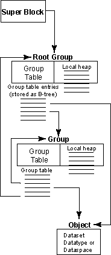
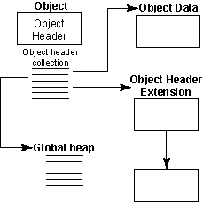

HDF5 File Format Specification Version 2.0
Introduction
| |

| |
| |
Figure 1: Relationships among the HDF5 root group, other groups, and objects
| |
| |

| |
| |
Figure 2: HDF5 objects -- datasets, datatypes, or dataspaces
| |
The format of an HDF5 file on disk encompasses several
key ideas of the HDF4 and AIO file formats as well as
addressing some shortcomings therein. The new format is
more self-describing than the HDF4 format and is more
uniformly applied to data objects in the file.
An HDF5 file appears to the user as a directed graph.
The nodes of this graph are the higher-level HDF5 objects
that are exposed by the HDF5 APIs:
- Groups
- Datasets
- Named datatypes
At the lowest level, as information is actually written to the disk,
an HDF5 file is made up of the following objects:
- A superblock
- B-tree nodes
- Heap blocks
- Object headers
- Object data
- Free space
The HDF5 library uses these low-level objects to represent the
higher-level objects that are then presented to the user or
to applications through the APIs.
For instance, a group is an object header that contains a message that
points to a local heap (for storing the links to objects in the group)
and to a B-tree (which indexes the links).
A dataset is an object header that contains messages that describe
datatype, dataspace, layout, filters, external files, fill value, etc
with the layout message pointing to either a raw data chunk or to a
B-tree that points to raw data chunks.
This Document
This document describes the lower-level data objects;
the higher-level objects and their properties are described
in the HDF5 User's Guide.
Three levels of information comprise the file format.
Level 0 contains basic information for identifying and
defining information about the file. Level 1 information contains
the information about the pieces of a file shared by many objects
in the file (such as a B-trees and heaps). Level 2 is the rest
of the file and contains all of the data objects, with each object
partitioned into header information, also known as
metadata, and data.
The sizes of various fields in the following layout tables are
determined by looking at the number of columns the field spans
in the table. There are three exceptions: (1) The size may be
overridden by specifying a size in parentheses, (2) the size of
addresses is determined by the Size of Offsets field
in the superblock and is indicated in this document with a
superscripted 'O', and (3) the size of length fields is determined
by the Size of Lengths field in the superblock and is
indicated in this document with a superscripted 'L'.
Values for all fields in this document should be treated as unsigned
integers, unless otherwise noted in the description of a field.
Additionally, all metadata fields are stored in little-endian byte
order.
All checksums used in the format are computed with the
Jenkins'
lookup3 algorithm.
Whenever a bit flag or field is mentioned for an entry, bits are
numbered from the lowest bit position in the entry.
Various tables in this document aligned with "This space inserted
only to align table nicely". These entries in the table are just
to make the table presentation nicer and do not represent any values
or padding in the file.
The superblock may begin at certain predefined offsets within
the HDF5 file, allowing a block of unspecified content for
users to place additional information at the beginning (and
end) of the HDF5 file without limiting the HDF5 library's
ability to manage the objects within the file itself. This
feature was designed to accommodate wrapping an HDF5 file in
another file format or adding descriptive information to an HDF5
file without requiring the modification of the actual file's
information. The superblock is located by searching for the
HDF5 format signature at byte offset 0, byte offset 512 and at
successive locations in the file, each a multiple of two of
the previous location, i.e. 0, 512, 1024, 2048, etc.
The superblock is composed of the format signature, followed by a
superblock version number and information that is specific to each
version of the superblock.
Currently, there are three versions of the superblock format.
Version 0 is the default format, while version 1 is basically the same
as version 0 with additional information when a non-default B-tree 'K'
value is stored. Version 2 is the latest format, with some fields
eliminated or compressed and with superblock extension and checksum
support.
Version 0 and 1 of the superblock are described below:
(Items marked with an 'O' in the above table are
of the size specified in "Size of Offsets.")
|
(Items marked with an '1' in the above table are
new in version 1 of the superblock)
|
| Field Name |
Description |
| Format Signature |
This field contains a constant value and can be used to
quickly identify a file as being an HDF5 file. The
constant value is designed to allow easy identification of
an HDF5 file and to allow certain types of data corruption
to be detected. The file signature of an HDF5 file always
contains the following values:
| Decimal: |
137 |
72 |
68 |
70 |
13 |
10 |
26 |
10 |
| Hexadecimal: |
89 |
48 |
44 |
46 |
0d |
0a |
1a |
0a |
| ASCII C Notation: |
\211 |
H |
D |
F |
\r |
\n |
\032 |
\n |
This signature both identifies the file as an HDF5 file
and provides for immediate detection of common
file-transfer problems. The first two bytes distinguish
HDF5 files on systems that expect the first two bytes to
identify the file type uniquely. The first byte is
chosen as a non-ASCII value to reduce the probability
that a text file may be misrecognized as an HDF5 file;
also, it catches bad file transfers that clear bit
7. Bytes two through four name the format. The CR-LF
sequence catches bad file transfers that alter newline
sequences. The control-Z character stops file display
under MS-DOS. The final line feed checks for the inverse
of the CR-LF translation problem. (This is a direct
descendent of the PNG file
signature.)
This field is present in version 0+ of the superblock.
|
| Version Number of the Superblock |
This value is used to determine the format of the
information in the superblock. When the format of the
information in the superblock is changed, the version number
is incremented to the next integer and can be used to
determine how the information in the superblock is
formatted.
Values of 0, 1 and 2 are defined for this field. (The format
of version 2 is described below, not here)
This field is present in version 0+ of the superblock.
|
| Version Number of the File's Free Space Information |
This value is used to determine the format of the
file's free space information.
The only value currently valid in this field is '0', which
indicates that the file's free space is as described
below.
This field is present in version 0 and 1 of the superblock.
|
| Version Number of the Root Group Symbol Table Entry |
This value is used to determine the format of the
information in the Root Group Symbol Table Entry. When the
format of the information in that field is changed, the
version number is incremented to the next integer and can be
used to determine how the information in the field
is formatted.
The only value currently valid in this field is '0', which
indicates that the root group symbol table entry is formatted as
described below.
This field is present in version 0 and 1 of the superblock.
|
| Version Number of the Shared Header Message Format |
This value is used to determine the format of the
information in a shared object header message. Since the format
of the shared header messages differs from the other private
header messages, a version number is used to identify changes
in the format.
The only value currently valid in this field is '0', which
indicates that shared header messages are formatted as
described below.
This field is present in version 0 and 1 of the superblock.
|
| Size of Offsets |
This value contains the number of bytes used to store
addresses in the file. The values for the addresses of
objects in the file are offsets relative to a base address,
usually the address of the superblock signature. This
allows a wrapper to be added after the file is created
without invalidating the internal offset locations.
This field is present in version 0+ of the superblock.
|
| Size of Lengths |
This value contains the number of bytes used to store
the size of an object.
This field is present in version 0+ of the superblock.
|
| Group Leaf Node K |
Each leaf node of a group B-tree will have at
least this many entries but not more than twice this
many. If a group has a single leaf node then it
may have fewer entries.
This value must be greater than zero.
See the description of B-trees below.
This field is present in version 0 and 1 of the superblock.
|
| Group Internal Node K |
Each internal node of a group B-tree will have at
least this many entries but not more than twice this
many. If the group has only one internal
node then it might have fewer entries.
This value must be greater than zero.
See the description of B-trees below.
This field is present in version 0 and 1 of the superblock.
|
| File Consistency Flags |
This value contains flags to indicate information
about the consistency of the information contained
within the file. Currently, the following bit flags are
defined:
- Bit 0 set indicates that the file is opened for
write-access.
- Bit 1 set indicates that the file has
been verified for consistency and is guaranteed to be
consistent with the format defined in this document.
- Bits 2-31 are reserved for future use.
Bit 0 should be
set as the first action when a file is opened for write
access and should be cleared only as the final action
when closing a file. Bit 1 should be cleared during
normal access to a file and only set after the file's
consistency is guaranteed by the library or a
consistency utility.
This field is present in version 0+ of the superblock.
|
| Indexed Storage Internal Node K |
Each internal node of an indexed storage B-tree will have at
least this many entries but not more than twice this
many. If the index storage B-tree has only one internal
node then it might have fewer entries.
This value must be greater than zero.
See the description of B-trees below.
This field is present in version 1 of the superblock.
|
| Base Address |
This is the absolute file address of the first byte of
the HDF5 data within the file. The library currently
constrains this value to be the absolute file address
of the superblock itself when creating new files;
future versions of the library may provide greater
flexibility. When opening an existing file and this address does
not match the offset of the superblock, the library assumes
that the entire contents of the HDF5 file have been adjusted in
the file and adjusts the base address and end of file address to
reflect their new positions in the file. Unless otherwise noted,
all other file addresses are relative to this base
address.
This field is present in version 0+ of the superblock.
|
| Address of Global Free-space Index |
The file's free space is not persistent for version 0 and 1 of
the superblock.
Currently this field always contains the
undefined address.
This field is present in version 0 and 1 of the superblock.
|
| End of File Address |
This is the absolute file address of the first byte past
the end of all HDF5 data. It is used to determine whether a
file has been accidently truncated and as an address where
file data allocation can occur if space from the free list is
not used.
This field is present in version 0+ of the superblock.
|
| Driver Information Block Address |
This is the relative file address of the file driver
information block which contains driver-specific
information needed to reopen the file. If there is no
driver information block then this entry should be the
undefined address.
This field is present in version 0 and 1 of the superblock.
|
| Root Group Symbol Table Entry |
This is the symbol table entry
of the root group, which serves as the entry point into
the group graph for the file.
This field is present in version 0 and 1 of the superblock.
|
Version 2 of the superblock is described below:
(Items marked with an 'O' in the above table are
of the size specified in "Size of Offsets.")
|
| Field Name |
Description |
| Format Signature |
This field is the same as described for versions 0 and 1 of the
superblock.
|
| Version Number of the Superblock |
This field has a value of 2 and has the same meaning as for
versions 0 and 1.
|
| Size of Offsets |
This field is the same as described for versions 0 and 1 of the
superblock.
|
| Size of Lengths |
This field is the same as described for versions 0 and 1 of the
superblock.
|
| File Consistency Flags |
This field is the same as desribed for versions 0 and 1 except
that it is smaller (the number of reserved bits has been reduced
from 30 to 6).
|
| Base Address |
This field is the same as described for versions 0 and 1 of the
superblock.
|
| Superblock Extension Address |
The field is the address of the object header for the
superblock extension.
If there is no extension then this entry should be the
undefined address.
|
| End of File Address |
This field is the same as described for versions 0 and 1 of the
superblock.
|
| Root Group Object Header Address |
This is the address of
the root group object header,
which serves as the entry point into the group graph for the file.
|
| Superblock Checksum |
The checksum for the superblock.
|
The driver information block is an optional region of the
file which contains information needed by the file driver
to reopen a file. The format is described below:
| Field Name |
Description |
| Version |
The version number of the Driver Information Block.
This document describes version 0.
|
| Driver Information Size |
The size in bytes of the Driver Information field.
|
| Driver Identification |
This is an eight-byte ASCII string without null
termination which identifies the driver and/or version number
of the Driver Information Block. The predefined driver encoded
in this field by the HDF5 library is identified by the
letters NCSA followed by the first four characters of
the driver name. If the Driver Information block is not
the original version then the last letter(s) of the
identification will be replaced by a version number in
ASCII, starting with 0.
Identification for user-defined drivers is also eight-byte long.
It can be arbitrary but should be unique to avoid
the four character prefix "NCSA".
|
| Driver Information |
Driver information is stored in a format defined by the
file driver (see description below). |
The two drivers encoded in the Driver Identification field are as follows:
-
Multi driver:
The identifier for this driver is "NCSAmulti".
This driver provides a mechanism for segregating raw data and different types of meta data
into multiple files.
These files are viewed by the library as a single virtual HDF5 file with a single file address.
A maximum of 6 files will be created for the following data:
superblock, B-tree, raw data, global heap, local heap, and object header.
More than one type of data can be written to the same file.
-
Family driver
The identifier for this driver is "NCSAfami" and is encoded in this field for library version 1.8 and after.
This driver is designed for systems that do not support files larger than 2 gigabytes
by splitting the HDF5 file address space across several smaller files.
It does nothing to segregate meta data and raw data;
they are mixed in the address space just as they would be in a single contiguous file.
The format of the Driver Information field for the above two drivers are described below:
| Field Name |
Description |
| Member Mapping |
These fields are integer values from 1 to 6
indicating how the data can be mapped to or merged with another type of
data.
| Member Mapping |
Description |
| 1 |
The superblock data. |
| 2 |
The B-tree data. |
| 3 |
The raw data. |
| 4 |
The global heap data. |
| 5 |
The local heap data. |
| 6 |
The object header data. |
For example, if the third field has the value 3 and all the rest have the
value 1, it means there are two files: one for raw data, and one for superblock,
B-tree, global heap, local heap, and object header.
|
| Reserved |
These fields are reserved and should always be zero. |
| Address of Member File N |
This field Specifies the virtual address at which the member file starts.
N is the number of member files.
|
| End of Address for Member File N |
This field is the end of the allocated address for the member file.
|
| Name of Member File N |
This field is the null-terminated name of the member file and
its length should be multiples of 8 bytes.
Additional bytes will be padded with NULLs. The default naming
convention is %s-X.h5, where X is one of the letters
s (for superblock), b (for B-tree), r (for raw data),
g (for global heap), l (for local heap), and o (for
object header). The name of the whole HDF5 file will substitute the %s
in the string.
|
| Field Name |
Description |
| Size of member file |
This field is the size of the member file in the family of files. |
The superblock extension is used to store superblock metadata
which is either optional, or added after the version of the superblock
was defined. Superblock extensions may only exist when version 2+ of
superblock is used. A superblock extension is an object header which may
hold the following messages:
B-Trees allow flexible storage for objects which tend to grow
in ways that cause the object to be stored discontiguously. B-trees
are described in various algorithms books including "Introduction to
Algorithms" by Thomas H. Cormen, Charles E. Leiserson, and Ronald
L. Rivest. B-trees are used in several places in the HDF5 file format,
when an index is needed for another data structure.
The version 1 B-tree structure described below is the original index
structure, but are limited by some bugs in our implementation (mainly in
how they handle deleting records). The version 1 B-trees are being phased
out in favor of the version 2 B-trees described below, although both
types of structures may be found in the same file, depending on
application settings when creating the file.
Version 1 B-trees in HDF5 files an implementation of the B-link tree,
in which the sibling nodes at a particular level in the tree are stored
in a doubly-linked list, is described in the "Efficient Locking for
Concurrent Operations on B-trees" paper by Phillip Lehman and S. Bing Yao
as published in the ACM Transactions on Database Systems,
Vol. 6, No. 4, December 1981.
The B-link trees implemented by the file format contain one more
key than the number of children. In other words, each child
pointer out of a B-tree node has a left key and a right key.
The pointers out of internal nodes point to sub-trees while
the pointers out of leaf nodes point to symbol nodes and
raw data chunks.
Aside from that difference, internal nodes and leaf nodes
are identical.
(Items marked with an 'O' in the above table are of the size
specified in "Size of Offsets" field in the superblock.)
|
| Field Name |
Description |
| Signature |
The ASCII character string "TREE" is
used to indicate the
beginning of a B-link tree node. This gives file
consistency checking utilities a better chance of
reconstructing a damaged file.
|
| Node Type |
Each B-link tree points to a particular type of data.
This field indicates the type of data as well as
implying the maximum degree K of the tree and
the size of each Key field.
| Node Type |
Description |
| 0 |
This tree points to group nodes. |
| 1 |
This tree points to raw data chunk nodes. |
|
| Node Level |
The node level indicates the level at which this node
appears in the tree (leaf nodes are at level zero). Not
only does the level indicate whether child pointers
point to sub-trees or to data, but it can also be used
to help file consistency checking utilities reconstruct
damanged trees.
|
| Entries Used |
This determines the number of children to which this
node points. All nodes of a particular type of tree
have the same maximum degree, but most nodes will point
to less than that number of children. The valid child
pointers and keys appear at the beginning of the node
and the unused pointers and keys appear at the end of
the node. The unused pointers and keys have undefined
values.
|
| Address of Left Sibling |
This is the relative file address of the left sibling of
the current node. If the current
node is the left-most node at this level then this field
is the undefined address.
|
| Address of Right Sibling |
This is the relative file address of the right sibling of
the current node. If the current
node is the right-most node at this level then this
field is the undefined address.
|
| Keys and Child Pointers |
Each tree has 2K+1 keys with 2K
child pointers interleaved between the keys. The number
of keys and child pointers actually containing valid
values is determined by the node's Entries Used field.
If that field is N then the B-link tree contains
N child pointers and N+1 keys.
|
| Key |
The format and size of the key values is determined by
the type of data to which this tree points. The keys are
ordered and are boundaries for the contents of the child
pointer; that is, the key values represented by child
N fall between Key N and Key
N+1. Whether the interval is open or closed on
each end is determined by the type of data to which the
tree points.
The format of the key depends on the node type.
For nodes of node type 0 (group nodes), the key is formatted as
follows:
| A single field of Size of Lengths
bytes: |
Indicates the byte offset into the local heap
for the first object name in the subtree which
that key describes.
|
For nodes of node type 1 (chunked raw data nodes), the key is
formatted as follows:
| Bytes 1-4: |
Size of chunk in bytes. |
| Bytes 4-8: |
Filter mask, a 32-bit bitfield indicating which
filters have been skipped for this chunk. Each filter
has an index number in the pipeline (starting at 0, with
the first filter to apply) and if that filter is skipped,
the bit corresponding to its index is set. |
| (D + 1) 64-bit fields: |
The offset of the
chunk within the dataset where D is the number
of dimensions of the dataset, and the last value is the
offset within the dataset's datatype and should always be
zero. For example, if
a chunk in a 3-dimensional dataset begins at the
position [5,5,5], there will be three
such 64-bit values, each with the value of
5, followed by a 0 value. |
|
| Child Pointer |
The tree node contains file addresses of subtrees or
data depending on the node level. Nodes at Level 0 point
to data addresses, either raw data chunks or group nodes.
Nodes at non-zero levels point to other nodes of the
same B-tree.
For raw data chunk nodes, the child pointer is the address
of a single raw data chunk. For group nodes, the child pointer
points to a symbol table, which contains
information for multiple symbol table entries.
|
Conceptually, each B-tree node looks like this:
| key[0] | |
child[0] | |
key[1] | |
child[1] | |
key[2] | |
... | |
... | |
key[N-1] | |
child[N-1] | |
key[N] |
where child[i] is a pointer to a sub-tree (at a level
above Level 0) or to data (at Level 0).
Each key[i] describes an item stored by the B-tree
(a chunk or an object of a group node). The range of values
represented by child[i] is indicated by key[i]
and key[i+1].
The following question must next be answered:
"Is the value described by key[i] contained in
child[i-1] or in child[i]?"
The answer depends on the type of tree.
In trees for groups (node type 0) the object described by
key[i] is the greatest object contained in
child[i-1] while in chunk trees (node type 1) the
chunk described by key[i] is the least chunk in
child[i].
That means that key[0] for group trees is sometimes unused;
it points to offset zero in the heap, which is always the
empty string and compares as "less-than" any valid object name.
And key[N] for chunk trees is sometimes unused;
it contains a chunk offset which compares as "greater-than"
any other chunk offset and has a chunk byte size of zero
to indicate that it is not actually allocated.
Version 2 B-trees are "traditional" B-trees, with one major difference.
Instead of just using a simple pointer (or address in the file) to a
child of an internal node, the pointer to the child node contains two
additional pieces of information: the number of records in the child
node itself, and the total number of records in the child node and
all its descendents. Storing this additional information allows fast
array-like indexing to locate the n'th record in the B-tree.
The entry into a version 2 B-tree is a header which contains global
information about the structure of the B-tree. The root node
address
field in the header points to the B-tree root node, which is either an
internal or leaf node, depending on the value in the header's
depth field. An internal node consists of records plus
pointers to further leaf or internal nodes in the tree. A leaf node
consists of solely of records. The format of the records depends on
the B-tree type (stored in the header).
(Items marked with an 'O' in the above table are of the size
specified in "Size of Offsets" field in the superblock.)
|
(Items marked with an 'L' in the above table are of the size
specified in "Size of Lengths" field in the superblock.)
|
| Field Name |
Description |
| Signature |
The ASCII character string "BTHD" is
used to indicate the header of a version 2 B-link tree node.
|
| Version |
The version number for this B-tree header. This document
describes version 0.
|
| Type |
This field indicates the type of B-tree:
| Value |
Description |
| 0 |
A "testing" B-tree, this value should not be
used for storing records in actual HDF5 files.
|
| 1 |
This B-tree is used for indexing indirectly accessed,
non-filtered 'huge' fractal heap objects.
|
| 2 |
This B-tree is used for indexing indirectly accessed,
filtered 'huge' fractal heap objects.
|
| 3 |
This B-tree is used for indexing directly accessed,
non-filtered 'huge' fractal heap objects.
|
| 4 |
This B-tree is used for indexing directly accessed,
filtered 'huge' fractal heap objects.
|
| 5 |
This B-tree is used for indexing the 'name' field for
links in indexed groups.
|
| 6 |
This B-tree is used for indexing the 'creation order'
field for links in indexed groups.
|
| 7 |
This B-tree is used for indexing shared object header
messages.
|
| 8 |
This B-tree is used for indexing the 'name' field for
indexed attributes.
|
| 9 |
This B-tree is used for indexing the 'creation order'
field for indexed attributes.
|
The format of records for each type is described below.
|
| Node Size |
This is the size in bytes of all B-tree nodes.
|
| Record Size |
This field is the size in bytes of the B-tree record.
|
| Depth |
This is the depth of the B-tree.
|
| Split Percent |
The percent full that a node needs to increase above before it
is split.
|
| Merge Percent |
The percent full that a node needs to be decrease below before it
is split.
|
| Root Node Address |
This is the address of the root B-tree node. A B-tree with
no records will have the undefined
address in this field.
|
| Number of Records in Root Node |
This is the number of records in the root node.
|
| Total Number of Records in B-tree |
This is the total number of records in the entire B-tree.
|
| Checksum |
This is the checksum for the B-tree header.
|
(Items marked with an 'O' in the above table are of the size
specified in "Size of Offsets" field in the superblock.)
|
| Field Name |
Description |
| Signature |
The ASCII character string "BTIN" is
used to indicate the internal node of a B-link tree.
|
| Version |
The version number for this B-tree internal node.
This document describes version 0.
|
| Type |
This field is the type of the B-tree node. It should always
be the same as the B-tree type in the header.
|
| Records |
The size of this field is determined by the number of records
for this node and the record size (from the header). The format
of records depends on the type of B-tree.
|
| Child Node Pointer |
This field is the address of the child node pointed to by the
internal node.
|
| Number of Records in Child Node |
This is the number of records in the child node pointed to by
the corresponding Node Pointer.
The number of bytes used to store this field is determined by
the maximum possible number of records able to be stored in the
child node.
The maximum number of records in a child node is computed in
the following way: Subtract the fixed size overhead for the
child node
(e.g. it's signature, version, checksum, etc. and one
pointer triplet of information for the child node (because there
is one more pointer triplet than records in each internal node))
from the size of nodes for the B-tree and dividing that result
by the size of a record plus the pointer triplet of information
stored to reach each child node from this node.
Note that leaf nodes don't encode any
child pointer triplets, so the maximum number of records in a
leaf node is just the node size minus the leaf node overhead,
divided by the record size.
Also note that the first level of internal nodes above the
leaf nodes don't encode the Total Number of Records in Child
Node value in the child pointer triplets (since it is the
same as the Number of Records in Child Node), so the
maximum number of records in these nodes is computed with the
equation above, but using (Child Pointer, Number of
Records in Child Node) pairs instead of triplets.
The number of
bytes used to encode this field is the least number of bytes
required to encode the maximum number of records in a child
node value for the child nodes below this level
in the B-tree.
For example, if the maximum number of child records is 123, one
byte will be used to encode these values in this node, if the
maximum number of child records is
20000, two bytes will be used to encode these values in this
node, etc. The maximum number of bytes used to encode these
values is 8 (i.e. an unsigned 64-bit integer).
|
| Total Number of Records in Child Node |
This is the total number of records for the node pointed to by
the corresponding Node Pointer and all its children.
This field exists only in nodes whose depth in the B-tree node
is greater than 1 (i.e. the "twig" internal nodes, just above
leaf nodes, don't store this field in their child node pointers).
The number of bytes used to store this field is determined by
the maximum possible number of records able to be stored in the
child node and its descendents.
The maximum possible number of records able to be stored in a
child node and its descendents is computed iteratively, in the
following way: The maximum number of records in a leaf node
is computed, then that value is used to compute the maximum
possible number of records in the first level of internal nodes
above the leaf nodes. Multiplying these two values together
determines the maximum possible number of records in child node
pointers for the level of nodes two levels above leaf nodes.
This process is continued up to any level in the B-tree.
The number of bytes used to encode this value is computed in
the same way as for the Number of Records in Child Node
field.
|
| Checksum |
This is the checksum for this node.
|
| Field Name |
Description |
| Signature |
The ASCII character string "BTLF" is
used to indicate the leaf node of a version 2 B-link tree.
|
| Version |
The version number for this B-tree leaf node.
This document describes version 0.
|
| Type |
This field is the type of the B-tree node. It should always
be the same as the B-tree type in the header.
|
| Records |
The size of this field is determined by the number of records
for this node and the record size (from the header). The format
of records depends on the type of B-tree.
|
| Checksum |
This is the checksum for this node.
|
The record layout for each stored (i.e. non-testing) B-tree type is as
follows:
(Items marked with an 'O' in the above table are of the size
specified in "Size of Offsets" field in the superblock.)
|
(Items marked with an 'L' in the above table are of the size
specified in "Size of Lengths" field in the superblock.)
|
| Field Name |
Description |
| Huge Object Address |
The address of the huge object in the file.
|
| Huge Object Length |
The length of the huge object in the file.
|
| Huge Object ID |
The heap ID for the huge object.
|
(Items marked with an 'O' in the above table are of the size
specified in "Size of Offsets" field in the superblock.)
|
(Items marked with an 'L' in the above table are of the size
specified in "Size of Lengths" field in the superblock.)
|
| Field Name |
Description |
| Filtered Huge Object Address |
The address of the filtered huge object in the file.
|
| Filtered Huge Object Length |
The length of the filtered huge object in the file.
|
| Filter Mask |
A 32-bit bitfield indicating which filters have been skipped for
this chunk. Each filter has an index number in the pipeline
(starting at 0, with the first filter to apply) and if that
filter is skipped, the bit corresponding to its index is set.
|
| Filtered Huge Object Memory Size |
The size of the de-filtered huge object in memory.
|
| Huge Object ID |
The heap ID for the huge object.
|
(Items marked with an 'O' in the above table are of the size
specified in "Size of Offsets" field in the superblock.)
|
(Items marked with an 'L' in the above table are of the size
specified in "Size of Lengths" field in the superblock.)
|
| Field Name |
Description |
| Huge Object Address |
The address of the huge object in the file.
|
| Huge Object Length |
The length of the huge object in the file.
|
(Items marked with an 'O' in the above table are of the size
specified in "Size of Offsets" field in the superblock.)
|
(Items marked with an 'L' in the above table are of the size
specified in "Size of Lengths" field in the superblock.)
|
| Field Name |
Description |
| Filtered Huge Object Address |
The address of the filtered huge object in the file.
|
| Filtered Huge Object Length |
The length of the filtered huge object in the file.
|
| Filter Mask |
A 32-bit bitfield indicating which filters have been skipped for
this chunk. Each filter has an index number in the pipeline
(starting at 0, with the first filter to apply) and if that
filter is skipped, the bit corresponding to its index is set.
|
| Filtered Huge Object Memory Size |
The size of the de-filtered huge object in memory.
|
| Field Name |
Description |
| Hash |
This field is hash value of the name for the link. The hash
value is the Jenkins' lookup3 checksum algorithm applied to
the link's name.
|
| ID |
This is a 7-byte sequence of bytes and is the heap ID for the
link record in the group's fractal heap.
|
| Field Name |
Description |
| Creation Order |
This field is the creation order value for the link.
|
| ID |
This is a 7-byte sequence of bytes and is the heap ID for the
link record in the group's fractal heap.
|
| Field Name |
Description |
| Message Location |
This field Indicates the location where the message is stored:
| Value |
Description |
| 0 |
Shared message is stored in shared message index heap.
|
| 1 |
Shared message is stored in object header.
|
|
| Hash |
This field is hash value of the shared message. The hash
value is the Jenkins' lookup3 checksum algorithm applied to
the shared message.
|
| Reference Count |
The number of objects which reference this message.
|
| Heap ID |
This is a 8-byte sequence of bytes and is the heap ID for the
shared message in the shared message index's fractal heap.
|
(Items marked with an 'O' in the above table are of the size
specified in "Size of Offsets" field in the superblock.)
|
| Field Name |
Description |
| Message Location |
This field Indicates the location where the message is stored:
| Value |
Description |
| 0 |
Shared message is stored in shared message index heap.
|
| 1 |
Shared message is stored in object header.
|
|
| Hash |
This field is hash value of the shared message. The hash
value is the Jenkins' lookup3 checksum algorithm applied to
the shared message.
|
| Message Type |
The object header message type of the shared message.
|
| Object Header Index |
This field indicates that the shared message is the n'th message
of its type in the specified object header.
|
| Object Header Address |
The address of the object header containing the shared message.
|
| Field Name |
Description |
| Heap ID |
This is a 8-byte sequence of bytes and is the heap ID for the
attribute in the object's attribute fractal heap.
|
| Message Flags |
The object header message flags for the attribute message.
|
| Creation Order |
This field is the creation order value for the attribute.
|
| Hash |
This field is hash value of the name for the attribute. The hash
value is the Jenkins' lookup3 checksum algorithm applied to
the attribute's name.
|
| Field Name |
Description |
| Heap ID |
This is a 8-byte sequence of bytes and is the heap ID for the
attribute in the object's attribute fractal heap.
|
| Message Flags |
The object header message flags for the attribute message.
|
| Creation Order |
This field is the creation order value for the attribute.
|
A group is an object internal to the file that allows
arbitrary nesting of objects within the file (including other groups).
A group maps a set of link names in the group to a set of relative
file addresses of objects in the file. Certain metadata for an object to
which the group points can be cached in the group's symbol table entry in
addition to being in the object's header.
An HDF5 object name space can be stored hierarchically by
partitioning the name into components and storing each
component as a link in a group. The link for a
non-ultimate component points to the group containing
the next component. The link for the last
component points to the object being named.
One implementation of a group is a collection of symbol table nodes
indexed by a B-link tree. Each symbol table node contains entries
for one or more links. If an attempt is made to add a link to an already
full symbol table node containing 2K entries, then the node is
split and one node contains K symbols and the other contains
K+1 symbols.
| Field Name |
Description |
| Signature |
The ASCII character string "SNOD" is
used to indicate the
beginning of a symbol table node. This gives file
consistency checking utilities a better chance of
reconstructing a damaged file.
|
| Version Number |
The version number for the symbol table node. This
document describes version 1. (There is no version '0'
of the symbol table node)
|
| Number of Entries |
Although all symbol table nodes have the same length,
most contain fewer than the maximum possible number of
link entries. This field indicates how many entries
contain valid data. The valid entries are packed at the
beginning of the symbol table node while the remaining
entries contain undefined values.
|
| Symbol Table Entries |
Each link has an entry in the symbol table node.
The format of the entry is described below.
There are 2K entries in each group node, where
K is the "Group Leaf Node K" value from the
superblock.
|
Each symbol table entry in a symbol table node is designed
to allow for very fast browsing of stored objects.
Toward that design goal, the symbol table entries
include space for caching certain constant metadata from the
object header.
(Items marked with an 'O' in the above table are of the size
specified in "Size of Offsets" field in the superblock.)
|
| Field Name |
Description |
| Link Name Offset |
This is the byte offset into the group's local
heap for the name of the link. The name is null
terminated.
|
| Object Header Address |
Every object has an object header which serves as a
permanent location for the object's metadata. In addition
to appearing in the object header, some of the object's metadata
can be cached in the scratch-pad space.
|
| Cache Type |
The cache type is determined from the object header.
It also determines the format for the scratch-pad space:
| Type: |
Description: |
| 0 |
No data is cached by the group entry. This
is guaranteed to be the case when an object header
has a link count greater than one.
|
| 1 |
Group object header metadata is cached in the
scratch-pad space. This implies that the symbol table
entry refers to another group.
|
| 2 |
The entry is a symbolic link. The first four bytes
of the scratch-pad space are the offset into the local
heap for the link value. The object header address
will be undefined.
|
|
| Reserved |
These four bytes are present so that the scratch-pad
space is aligned on an eight-byte boundary. They are
always set to zero.
|
| Scratch-pad Space |
This space is used for different purposes, depending
on the value of the Cache Type field. Any metadata
about an object represented in the scratch-pad
space is duplicated in the object header for that
object.
Furthermore, no data is cached in the group
entry scratch-pad space if the object header for
the object has a link count greater than one.
|
Format of the Scratch-pad Space
The symbol table entry scratch-pad space is formatted
according to the value in the Cache Type field.
If the Cache Type field contains the value zero
(0) then no information is
stored in the scratch-pad space.
If the Cache Type field contains the value one
(1), then the scratch-pad space
contains cached metadata for another object header
in the following format:
(Items marked with an 'O' in the above table are of the size
specified in "Size of Offsets" field in the superblock.)
|
| Field Name |
Description |
| Address of B-tree |
This is the file address for the root of the
group's B-tree.
|
| Address of Name Heap |
This is the file address for the group's local
heap, in which are stored the group's symbol names.
|
If the Cache Type field contains the value two
(2), then the scratch-pad space
contains cached metadata for a symbolic link
in the following format:
| Field Name |
Description |
| Offset to Link Value |
The value of a symbolic link (that is, the name of the
thing to which it points) is stored in the local heap.
This field is the 4-byte offset into the local heap for
the start of the link value, which is null terminated.
|
A local heap is a collection of small pieces of data that are particular
to a single object in the HDF5 file. Objects can be
inserted and removed from the heap at any time.
The address of a heap does not change once the heap is created.
For example, a group stores addresses of objects in symbol table nodes
with the names of links stored in the group's local heap.
(Items marked with an 'O' in the above table are of the size
specified in "Size of Offsets" field in the superblock.)
|
(Items marked with an 'L' in the above table are of the size
specified in "Size of Lengths" field in the superblock.)
|
| Field Name |
Description |
| Signature |
The ASCII character string "HEAP"
is used to indicate the
beginning of a heap. This gives file consistency
checking utilities a better chance of reconstructing a
damaged file.
|
| Version |
Each local heap has its own version number so that new
heaps can be added to old files. This document
describes version zero (0) of the local heap.
|
| Data Segment Size |
The total amount of disk memory allocated for the heap
data. This may be larger than the amount of space
required by the objects stored in the heap. The extra
unused space in the heap holds a linked list of free blocks.
|
| Offset to Head of Free-list |
This is the offset within the heap data segment of the
first free block (or the
undefined address if there is no
free block). The free block contains "Size of Lengths" bytes that
are the offset of the next free block (or the
value '1' if this is the
last free block) followed by "Size of Lengths" bytes that store
the size of this free block. The size of the free block includes
the space used to store the offset of the next free block and
the size of the current block, making the minimum size of a free
block 2 * "Size of Lengths".
|
| Address of Data Segment |
The data segment originally starts immediately after
the heap header, but if the data segment must grow as a
result of adding more objects, then the data segment may
be relocated, in its entirety, to another part of the
file.
|
Objects within a local heap should be aligned on an 8-byte boundary.
Each HDF5 file has a global heap which stores various types of
information which is typically shared between datasets. The
global heap was designed to satisfy these goals:
- Repeated access to a heap object must be efficient without
resulting in repeated file I/O requests. Since global heap
objects will typically be shared among several datasets, it is
probable that the object will be accessed repeatedly.
- Collections of related global heap objects should result in
fewer and larger I/O requests. For instance, a dataset of
object references will have a global heap object for each
reference. Reading the entire set of object references
should result in a few large I/O requests instead of one small
I/O request for each reference.
- It should be possible to remove objects from the global heap
and the resulting file hole should be eligible to be reclaimed
for other uses.
The implementation of the heap makes use of the memory management
already available at the file level and combines that with a new
object called a collection to achieve goal B. The global heap
is the set of all collections. Each global heap object belongs to
exactly one collection and each collection contains one or more global
heap objects. For the purposes of disk I/O and caching, a collection is
treated as an atomic object, addressing goal A.
When a global heap object is deleted from a collection (which occurs
when its reference count falls to zero), objects located after the
deleted object in the collection are packed down toward the beginning
of the collection and the collection's global heap object 0 is created
(if possible) or its size is increased to account for the recently
freed space. There are no gaps between objects in each collection,
with the possible exception of the final space in the collection, if
it is not large enough to hold the header for the collection's global
heap object 0. These features address goal C.
The HDF5 library creates global heap collections as needed, so there may
be multiple collections throughout the file. The set of all of them is
abstractly called the "global heap", although they don't actually link
to each other, and there is no global place in the file where you can
discover all of the collections. The collections are found simply by
finding a reference to one through another object in the file. For
example, data of variable-length datatype elements is stored in the
global heap and is accessed via a global heap ID. The format for
global heap IDs is described at the end of this section.
(Items marked with an 'L' in the above table are of the size
specified in "Size of Lengths" field in the superblock.)
|
| Field Name |
Description |
| Signature |
The ASCII character string "GCOL"
is used to indicate the
beginning of a collection. This gives file consistency
checking utilities a better chance of reconstructing a
damaged file.
|
| Version |
Each collection has its own version number so that new
collections can be added to old files. This document
describes version one (1) of the collections (there is no
version zero (0)).
|
| Collection Size |
This is the size in bytes of the entire collection
including this field. The default (and minimum)
collection size is 4096 bytes which is a typical file
system block size. This allows for 127 16-byte heap
objects plus their overhead (the collection header of 16 bytes
and the 16 bytes of information about each heap object).
|
| Global Heap Object 1 through N |
The objects are stored in any order with no
intervening unused space.
|
| Global Heap Object 0 |
Global Heap Object 0 (zero), when present, represents the free
space in the collection. Free space always appears at the end of
the collection. If the free space is too small to store the header
for Object 0 (described below) then the header is implied and the
collection contains no free space.
|
(Items marked with an 'L' in the above table are of the size
specified in "Size of Lengths" field in the superblock.)
|
| Field Name |
Description |
| Heap Object Index |
Each object has a unique identification number within a
collection. The identification numbers are chosen so that
new objects have the smallest value possible with the
exception that the identifier 0 always refers to the
object which represents all free space within the
collection.
|
| Reference Count |
All heap objects have a reference count field. An
object which is referenced from some other part of the
file will have a positive reference count. The reference
count for Object 0 is always zero.
|
| Reserved |
Zero padding to align next field on an 8-byte boundary.
|
| Object Size |
This is the size of the object data stored for the object.
The actual storage space allocated for the object data is rounded
up to a multiple of eight.
|
| Object Data |
The object data is treated as a one-dimensional array
of bytes to be interpreted by the caller.
|
The format for the ID used to locate an object in the global heap is
described here:
(Items marked with an 'O' in the above table are of the size
specified in "Size of Offsets" field in the superblock.)
|
| Field Name |
Description |
| Collection Address |
This field is the address of the global heap collection
where the data object is stored.
|
| ID |
This field is the index of the data object within the
global heap collection.
|
Each fractal heap consists of a header and zero or more direct and
indirect blocks (described below). The header contains general
information as well as
initialization parameters for the doubling table. The Root
Block Address in the header points to the first direct or
indirect block in the heap.
Fractal heaps are based on a data structure called a doubling
table. A doubling table provides a mechanism for quickly
extending an array-like data structure that minimizes the number of
empty blocks in the heap, while retaining very fast lookup of any
element within the array. More information on fractal heaps and
doubling tables can be found in the RFC
“Private
Heaps in HDF5.”
The fractal heap implements the doubling table structure with
indirect and direct blocks.
Indirect blocks in the heap do not actually contain data for
objects in the heap, their "size" is abstract -
they represent the indexing structure for locating the
direct blocks in the doubling table.
Direct blocks
contain the actual data for objects stored in the heap.
All indirect blocks have a constant number of block entries in each
row, called the width of the doubling table (stored in
the heap header).
The number
of rows for each indirect block in the heap is determined by the
size of the block that the indirect block represents in the
doubling table (calculation of this is shown below) and is
constant, except for the "root"
indirect block, which expands and shrinks its number of rows as
needed.
Blocks in the first two rows of an indirect block are
Starting Block Size number of bytes in size, and the blocks
in each subsequent row are twice the size of the blocks in the
previous row (i.e. blocks in the third row are twice the
Starting Block Size, blocks in the fourth row are
four times the Starting Block Size, etc.). Entries for
blocks up to the Maximum Direct Block Size point to direct
blocks and entries for blocks greater than that size point to
further indirect blocks (which have their own entries for direct
and indirect blocks, etc).
The number of rows of blocks, nrows, in an
indirect block of size iblock_size is given by the
following expression:
nrows = (log2(iblock_size) -
log2(<Starting Block Size> *
<Width>)) + 1
The maximum number of rows of direct blocks, max_dblock_rows,
in any indirect block of a fractal heap is given by the
following expression:
max_dblock_rows =
(log2(<Max. Direct Block Size>) -
log2(<Starting Block Size>)) + 2
Using the computed values for nrows and
max_dblock_rows, along with the Width of the
doubling table, the number of direct and indirect block entries
(K and N in the indirect block description, below)
in an indirect block can be computed:
K = MIN(nrows, max_dblock_rows) *
Width
If nrows is less than or equal to max_dblock_rows,
N is 0. Otherwise, N is simply computed:
N = K - (max_dblock_rows *
Width)
The size indirect blocks on disk is determined by the number
of rows in the indirect block (computed above). The size of direct
blocks on disk is exactly the size of the block in the doubling
table.
(Items marked with an 'O' in the above table are of the size
specified in "Size of Offsets" field in the superblock.)
|
(Items marked with an 'L' in the above table are of the size
specified in "Size of Lengths" field in the superblock.)
|
| Field Name |
Description |
| Signature |
The ASCII character string "FRHP"
is used to indicate the
beginning of a fractal heap header. This gives file consistency
checking utilities a better chance of reconstructing a
damaged file.
|
| Version |
This document describes version 0.
|
| Heap ID Length |
This is the length in bytes of heap object IDs for this heap.
|
| I/O Filters' Encoded Length |
This is the size in bytes of the encoded I/O Filter Information.
|
| Flags |
This field is the heap status flag and is a bit-field indicating additional
information about the fractal heap.
| Bit(s) |
Description |
0 |
If set, the ID value to use for huge object has wrapped
around. If the value for the Next Huge Object ID
has wrapped around, each new huge object inserted into the
heap will require a search for an ID value.
|
1 |
If set, the direct blocks in the heap are checksummed.
|
2-7 |
Reserved |
|
| Maximum Size of Managed Objects |
This is the maximum size of managed objects allowed in the heap.
Objects greater than this this are 'huge' objects and will be
stored in the file directly, rather than in a direct block for
the heap.
|
| Next Huge Object ID |
This is the next ID value to use for a huge object in the heap.
|
| v2 B-tree Address of Huge Objects |
This is the address of the v2 B-tree
used to track huge objects in the heap. The type of records
stored in the v2 B-tree will
be determined by whether the address & length of a huge object
can fit into a heap ID (if yes, it's a "directly" accessed
huge object) and whether there is a filter used on objects
in the heap.
|
| Amount of Free Space in Managed Blocks |
This is the total amount of free space in managed direct blocks
(in bytes).
|
| Address of Managed Block Free Space Manager |
This is the address of the
Free-Space Manager for
managed blocks.
|
| Amount of Managed Space in Heap |
This is the total amount of managed space in the heap (in bytes),
essentially the upper bound of the heap's linear address space.
|
| Amount of Allocated Managed Space in Heap |
This is the total amount of managed space (in bytes) actually
allocated in
the heap. This can be less than the Amount of Managed Space
in Heap field, if some direct blocks in the heap's linear
address space are not allocated.
|
| Offset of Direct Block Allocation Iterator in Managed Space |
This is the linear heap offset where the next direct
block should be allocated at (in bytes). This may be less than
the Amount of Managed Space in Heap value because the
heap's address space is increased by a "row" of direct blocks
at a time, rather than by single direct block increments.
|
| Number of Managed Objects in Heap |
This is the number of managed objects in the heap.
|
| Size of Huge Objects in Heap |
This is the total size of huge objects in the heap (in bytes).
|
| Number of Huge Objects in Heap |
This is the number of huge objects in the heap.
|
| Size of Tiny Objects in Heap |
This is the total size of tiny objects that are packed in heap
IDs (in bytes).
|
| Number of Tiny Objects in Heap |
This is the number of tiny objects that are packed in heap IDs.
|
| Table Width |
This is the number of columns in the doubling table for managed
blocks. This value must be a power of two.
|
| Starting Block Size |
This is the starting block size to use in the doubling table for
managed blocks (in bytes). This value must be a power of two.
|
| Maximum Direct Block Size |
This is the maximum size allowed for a managed direct block.
Objects inserted into the heap that are larger than this value
(less the # of bytes of direct block prefix/suffix)
are stored as 'huge' objects. This value must be a power of
two.
|
| Maximum Heap Size |
This is the maximum size of the heap's linear address space for
managed objects (in bytes). The value stored is the log2 of
the actual value, that is: the # of bits of the address space.
'Huge' and 'tiny' objects aren't counted in this value, since
they don't store objects in the linear address space of the
heap.
|
| Starting # of Rows in Root Indirect Block |
This is the starting number of rows for the root indirect block.
A value of 0 indicates that the root indirect block will have
the maximum number of rows needed to address the heap's Maximum
Heap Size.
|
| Address of Root Block |
This is the address of the root block for the heap. It can
be the undefined address if
there is no data in the heap. It either points to a direct
block (if the Current # of Rows in the Root Indirect Block
value is 0), or an indirect block.
|
| Current # of Rows in Root Indirect Block |
This is the current number of rows in the root indirect block.
A value of 0 indicates that Address of Root Block
points to direct block instead of indirect block.
|
| Size of Filtered Root Direct Block |
This is the size of the root direct block, if filters are
applied to heap objects (in bytes). This field is only
stored in the header if the I/O Filters' Encoded Length
is greater than 0.
|
| I/O Filter Mask |
This is the filter mask for the root direct block, if filters
are applied to heap objects. This mask has the same format as
that used for the filter mask in chunked raw data records in a
v1 B-tree.
This field is only
stored in the header if the I/O Filters' Encoded Length
is greater than 0.
|
| I/O Filter Information |
This is the I/O filter information encoding direct blocks and
huge objects, if filters are applied to heap objects. This
field is encoded as a Filter Pipeline
message.
The size of this field is determined by I/O Filters'
Encoded Length.
|
| Checksum |
This is the checksum for the header.
|
(Items marked with an 'O' in the above table are of the size
specified in "Size of Offsets" field in the superblock.)
|
| Field Name |
Description |
| Signature |
The ASCII character string "FHDB"
is used to indicate the
beginning of a fractal heap direct block. This gives file consistency
checking utilities a better chance of reconstructing a
damaged file.
|
| Version |
This document describes version 0.
|
| Heap Header Address |
This is the address for the fractal heap header that this
block belongs to. This field is principally used for file
integrity checking.
|
| Block Offset |
This is the offset of the block within the fractal heap's
address space (in bytes). The number of bytes used to encode
this field is the Maximum Heap Size (in the heap's
header) divided by 8 and rounded up to the next highest integer,
for values that aren't a multiple of 8. This value is
principally used for file integrity checking.
|
| Checksum |
This is the checksum for the direct block.
This field is only present if bit 1 of Flags in the
heap's header is set.
|
| Object Data |
This section of the direct block stores the actual data for
objects in the heap. The size of this section is determined by
the direct block's size, minus the size of the other fields
stored in the direct block (the Signature,
Version, etc., including the Checksum if it's
present).
|
(Items marked with an 'O' in the above table are of the size
specified in "Size of Offsets" field in the superblock.)
|
(Items marked with an 'L' in the above table are of the size
specified in "Size of Lengths" field in the superblock.)
|
| Field Name |
Description |
| Signature |
The ASCII character string "FHIB" is used to
indicate the beginning of a fractal heap indirect block. This
gives file consistency checking utilities a better chance of
reconstructing a damaged file.
|
| Version |
This document describes version 0.
|
| Heap Header Address |
This is the address for the fractal heap header that this
block belongs to. This field is principally used for file
integrity checking.
|
| Block Offset |
This is the offset of the block within the fractal heap's
address space (in bytes). The number of bytes used to encode
this field is the Maximum Heap Size (in the heap's
header) divided by 8 and rounded up to the next highest integer,
for values that aren't a multiple of 8. This value is
principally used for file integrity checking.
|
| Child Direct Block #K Address |
This field is the address of the child direct block.
The size of the [uncompressed] direct block can be computed by
its offset in the heap's linear address space.
|
| Size of Filtered Direct Block #K |
This is the size of the child direct block after passing through
the I/O filters defined for this heap (in bytes). If no I/O
filters are present for this heap, this field is not present.
|
| Filter Mask for Direct Block #K |
This is the I/O filter mask for the filtered direct block.
This mask has the same format as that used for the filter mask
in chunked raw data records in a v1 B-tree.
If no I/O filters are present for this heap, this field is not
present.
|
| Child Indirect Block #N Address |
This field is the address of the child indirect block.
The size of the indirect block can be computed by
its offset in the heap's linear address space.
|
| Checksum |
This is the checksum for the indirect block.
|
An object in the fractal heap is identified by means of a fractal heap ID,
which encodes information to locate the object in the heap.
Currently, the fractal heap stores an object in one of three ways,
depending on the object's size:
| Type |
Description |
| Tiny |
When an object is small enough to be encoded in the heap ID, the
object's data is embedded in the fractal heap ID itself. There are
2 sub-types for this type of object: normal and extended. The
sub-type for tiny heap IDs depends on whether the heap ID is large
enough to store objects greater than 16 bytes or not. If the
heap ID length is 18 bytes or smaller, the "normal" tiny heap ID
form is used. If the heap ID length is greater than 18 bytes in
length, the "extented" form is used. See format description below
for both sub-types.
|
| Huge |
When the size of an object is larger than Maximum Size of
Managed Objects in the Fractal Heap Header, the
object's data is stored on its own in the file and the object
is tracked/indexed via a version 2 B-tree. All huge objects
for a particular fractal heap use the same v2 B-tree. All huge
objects for a particular fractal heap use the same format for
their huge object IDs.
Depending on whether the IDs for a heap are large enough to hold
the object's retrieval information and whether I/O pipeline filters
are applied to the heap's objects, 4 sub-types are derived for
for huge object IDs for this heap:
| Sub-type |
Description |
| Directly accessed, non-filtered |
The object's address and length are embedded in the
fractal heap ID itself and the object is directly accessed
from them. This allows the object to be accessed without
resorting to the B-tree.
|
| Directly accessed, filtered |
The filtered object's address, length, filter mask and
de-filtered size are embedded in the fractal heap ID itself
and the object is accessed directly with them. This allows
the object to be accessed without resorting to the B-tree.
|
| Indirectly accessed, non-filtered |
The object is located by using a B-tree key embedded in
the fractal heap ID to retrieve the address and length from
the version 2 B-tree for huge objects. Then, the address
and length are used to access the object.
|
| Indirectly accessed, filtered |
The object is located by using a B-tree key embedded in
the fractal heap ID to retrieve the filtered object's
address, length, filter mask and de-filtered size from the
version 2 B-ree for huge objects. Then, this information
is used to access the object.
|
|
| Managed |
When the size of an object does not meet the above two
conditions, the object is stored and managed via the direct and
indirect blocks based on the doubling table.
|
The specific format for each type of heap ID is described below:
| Field Name |
Description |
| Version, Type & Length |
This is a bit field with the following definition:
| Bit |
Description |
6-7 |
The current version of ID format. This document
describes version 0.
|
4-5 |
The ID type. Tiny objects have a value of 2.
|
0-3 |
The length of the tiny object. The value stored is one
less than the actual length (since zero-length objects are
not allowed to be stored in the heap).
For example, an object of actual length 1 has an encoded
length of 0, an object of actual length 2 has an encoded
length of 1, etc.
|
|
| Data |
This is the data for the object.
|
| Field Name |
Description |
| Version, Type & Length |
This is a bit field with the following definition:
| Bit |
Description |
6-7 |
The current version of ID format. This document
describes version 0.
|
4-5 |
The ID type. Tiny objects have a value of 2.
|
0-3 |
These 4 bits, together with the next byte, form an
unsigned 12-bit integer for holding the length of the
object. These 4-bits are bits 8-11 of the 12-bit integer.
See description for the Extended Length field below.
|
|
| Extended Length |
This byte, together with the 4 bits in the previous byte,
forms an unsigned 12-bit integer for holding the length of the
tiny object. These 8 bits are bits 0-7 of the 12-bit integer
formed. The value stored is one less than the actual length
(since zero-length objects are not allowed to be stored in the
heap). For example, an object of actual length 1 has an encoded
length of 0, an object of actual length 2 has an encoded
length of 1, etc.
|
| Data |
This is the data for the object.
|
(Items marked with an 'L' in the above table are of the size
specified in "Size of Lengths" field in the superblock.)
|
| Field Name |
Description |
| Version & Type |
This is a bit field with the following definition:
| Bit |
Description |
6-7 |
The current version of ID format. This document
describes version 0.
|
4-5 |
The ID type. Huge objects have a value of 1.
|
0-3 |
Reserved.
|
|
| v2 B-tree Key |
This field is the B-tree key for retrieving the information
from the version 2 B-tree for huge objects needed to access the
object. See the description of v2 B-tree
records sub-type 1 & 2 for a description of the fields. New key
values are derived from Next Huge Object ID in the
Fractal Heap Header.
|
(Items marked with an 'O' in the above table are of the size
specified in "Size of Offsets" field in the superblock.)
|
(Items marked with an 'L' in the above table are of the size
specified in "Size of Lengths" field in the superblock.)
|
| Field Name |
Description |
| Version & Type |
This is a bit field with the following definition:
| Bit |
Description |
6-7 |
The current version of ID format. This document
describes version 0.
|
4-5 |
The ID type. Huge objects have a value of 1.
|
0-3 |
Reserved.
|
|
| Address |
This field is the address of the object in the file.
|
| Length |
This field is the length of the object in the file.
|
(Items marked with an 'O' in the above table are of the size
specified in "Size of Offsets" field in the superblock.)
|
(Items marked with an 'L' in the above table are of the size
specified in "Size of Lengths" field in the superblock.)
|
| Field Name |
Description |
| Version & Type |
This is a bit field with the following definition:
| Bit |
Description |
6-7 |
The current version of ID format. This document
describes version 0.
|
4-5 |
The ID type. Huge objects have a value of 1.
|
0-3 |
Reserved.
|
|
| Address |
This field is the address of the filtered object in the file.
|
| Length |
This field is the length of the filtered object in the file.
|
| Filter Mask |
This field is the I/O pipeline filter mask for the
filtered object in the file.
|
| Filtered Size |
This field is the size of the de-flitered object in the file.
|
| Field Name |
Description |
| Version & Type |
This is a bit field with the following definition:
| Bit |
Description |
6-7 |
The current version of ID format. This document
describes version 0.
|
4-5 |
The ID type. Managed objects have a value of 0.
|
0-3 |
Reserved.
|
|
| Offset |
This field is the offset of the object in the heap. This field's
size is the minimum number of bytes necessary to encode the
Maximum Heap Size value (from the Fractal Heap
Header). For example, if the value of the Maximum
Heap Size is less than 256 bytes, this field is 1 byte
in length, a Maximum Heap Size of of 256-65535 bytes
uses a 2 byte length, etc.
|
| Length |
This field is the length of the object in the heap.
It is determined by taking the minimum value of
Maximum Direct Block Size
and Maximum Size of Managed Objects in the
Fractal Heap Header. Again, the minimum number of
bytes needed to encode that value is used for the size of
this field.
|
Free-space managers are used to describe space within a heap or
the entire HDF5 file that is not currently used for that heap or
file.
The free-space manager header contains metadata information
about the space being tracked, along with the address of the list
of free space sections which actually describes the free
space.
The header records information about free-space sections being
tracked, creation parameters for handling free-space sections of a
client, and section information used to locate the collection of
free-space sections.
The free-space section list stores a collection of
free-space sections that is specific to each client of the
free-space manager.
For example, the fractal heap is a client of the free space manager
and uses it to track unused space within the heap. There are 4
types of section records for the fractal heap, each of which has
its own format, listed below.
(Items marked with an 'O' in the above table are of the size
specified in "Size of Offsets" field in the superblock.)
|
(Items marked with an 'L' in the above table are of the size
specified in "Size of Lengths" field in the superblock.)
|
| Field Name |
Description |
| Signature |
The ASCII character string "FSHD" is used to
indicate the beginning of the Free-Space Manager Header.
This gives file consistency checking utilities a better chance of
reconstructing a damaged file.
|
| Version |
This is the version number for the Free-Space Manager Header
and this document describes version 0.
|
| Client ID |
This is the client ID for identifying the user of this
free-space manager:
| ID |
Description |
0 |
Fractal heap
|
1 |
File
|
2+ |
Reserved.
|
|
| Total Space Tracked |
This is the total amount of free space being tracked, in bytes.
|
| Total Number of Sections |
This is the total number of free-space sections being tracked.
|
| Number of Serialized Sections |
This is the number of serialized free-space sections being
tracked.
|
| Number of Un-Serialized Sections |
This is the number of un-serialized free-space sections being
managed. Un-serialized sections are created by the free-space
client when the list of sections is read in.
|
| Number of Section Classes |
This is the number of section classes handled by this free space
manager for the free-space client.
|
| Shrink Percent |
This is the percent of current size to shrink the allocated
serialized free-space section list.
|
| Expand Percent |
This is the percent of current size to expand the allocated
serialized free-space section list.
|
| Size of Address Space |
This is the size of the address space that free-space sections
are within. This is stored as the log2 of the
actual value (i.e. the number of bits required to store values
within that address space).
|
| Maximum Section Size |
This is the maximum size of a section to be tracked.
|
| Address of Serialized Section List |
This is the address where the serialized free-space section
list is stored.
|
| Size of Serialized Section List Used |
This is the size of the serialized free-space section
list used (in bytes). This value must be less than
or equal to the allocated size of serialized section
list, below.
|
| Allocated Size of Serialized Section List |
This is the size of serialized free-space section list
actually allocated (in bytes).
|
| Checksum |
This is the checksum for the free-space manager header.
|
The free-space sections being managed are stored in a free-space
section list, described below. The sections in the free-space
section list are stored in the following way: a count of the
number of
sections describing a particular size of free space and the size of the
free-space desribed (in bytes), followed by a list of section
description records; then another section count & size, followed by
the list of section descriptions for that size; etc.
(Items marked with an 'O' in the above table are of the size
specified in "Size of Offsets" field in the superblock.)
|
| Field Name |
Description |
| Signature |
The ASCII character string "FSSE" is used to
indicate the beginning of the Free-Space Section Information.
This gives file consistency checking utilities a better chance of
reconstructing a damaged file.
|
| Version |
This is the version number for the Free-Space Section List
and this document describes version 0.
|
| Free-Space Manager Header Address |
This is the address of the Free-Space Manager Header.
This field is principally used for file
integrity checking.
|
| Number of Section Records for Set #N |
This is the number of free-space section records for set #N.
The length of this field is the minimum number of bytes needed
to store the number of serialized sections (from the
free-space manager header).
The number of sets of free-space section records is
determined by the size of serialized section list in
the free-space manager header.
|
| Section Size for Record Set #N |
This is the size (in bytes) of the free-space section described
for all the section records in set #N.
The length of this field is the minimum number of bytes needed
to store the maximum section size (from the
free-space manager header).
|
| Record Set #N Section #K Offset |
This is the offset (in bytes) of the free-space section within
the client for the free-space manager.
The length of this field is the minimum number of bytes needed
to store the size of address space (from the
free-space manager header).
|
| Record Set #N Section #K Type |
This is the type of the section record, used to decode the
record set #N section #K data information.
The defined record type for file client is:
| Type |
Description |
0 |
File's section (a range of actual bytes in file)
|
1+ |
Reserved.
|
The defined record types for fractal heap client are:
| Type |
Description |
0 |
Fractal heap "single" section
|
1 |
Fractal heap "first row" section
|
2 |
Fractal heap "normal row" section
|
3 |
Fractal heap "indirect" section
|
4+ |
Reserved.
|
|
| Record Set #N Section #K Data |
This is the section-type specific information for each record
in the record set, described below.
|
| Checksum |
This is the checksum for the Free-Space Section List.
|
The section-type specific data for each free-space section record is
described below:
| Field Name |
Description |
| Fractal Heap Block Offset |
The offset of the indirect block in the fractal heap's address
space containing the empty blocks.
The number of bytes used to encode this field is the minimum
number of bytes needed to encode values for the Maximum
Heap Size (in the fractal heap's header).
|
| Block Start Row |
This is the row that the empty blocks start in.
|
| Block Start Column |
This is the column that the empty blocks start in.
|
| Number of Blocks |
This is the number of empty blocks covered by the section.
|
The shared object header message table is used to locate
object
header messages that are shared between two or more object headers
in the file. Shared object header messages are stored and indexed
in the file in one of two ways: indexed sequentially in a
shared header message list or indexed with a v2 B-tree.
The shared messages themselves are either stored in a fractal
heap (when two or more objects share the message), or remain in an
object's header (when only one object uses the message currently,
but the message can be shared in the future).
The shared object header message table
contains a list of shared message index headers. Each index header
records information about the version of the index format, the index
storage type, flags for the message types indexed, the number of
messages in the index, the address where the index resides,
and the fractal heap address if shared messages are stored there.
Each index can be either a list or a v2 B-tree and may transition
between those two forms as the number of messages in the index
varies. Each shared message record contains information used to
locate the shared message from either a fractal heap or an object
header. The types of messages that can be shared are: Dataspace,
Datatype, Fill Value, Filter Pipeline and Attribute.
The shared object header message table is pointed to
from a shared message table message
in the superblock extension for a file. This message stores the
version of the table format, along with the number of index headers
in the table.
(Items marked with an 'O' in the above table are of the size
specified in "Size of Offsets" field in the superblock.)
|
| Field Name |
Description |
| Signature |
The ASCII character string "SMTB" is used to
indicate the beginning of the Shared Object Header Message table.
This gives file consistency checking utilities a better chance of
reconstructing a damaged file.
|
| Version for index #N |
This is the version number for the list of shared object header message
indexes and this document describes version 0.
|
| Index Type for index #N |
The type of index can be an unsorted list or a v2 B-tree.
|
| Message Type Flags for index #N |
This field indicates the type of messages tracked in the index,
as follows:
| Bits |
Description |
0 |
If set, the index tracks Dataspace Messages.
|
1 |
If set, the message tracks Datatype Messages.
|
2 |
If set, the message tracks Fill Value Messages.
|
3 |
If set, the message tracks Filter Pipeline Messages.
|
4 |
If set, the message tracksn Attribute Messages.
|
5-15 |
Reserved (zero).
|
An index can track more than one type of message, but each type
of message can only by in one index.
|
| Minimum Message Size for index #N |
This is the message size sharing threshold for the index.
If the encoded size of the message is less than this value, the
message is not shared.
|
| List Cutoff for index #N |
This is is the cutoff value for the indexing of messages to
switch from a list to a v2 B-tree. If the number of messages
is greater than this value, the index should be a v2 B-tree.
|
| v2 B-tree Cutoff for index #N |
This is is the cutoff value for the indexing of messages to
switch from a v2 B-tree back to a list. If the number of
messages is less than this value, the index should be a list.
|
| Number of Messages for index #N |
The number of shared messages being tracked for the index.
|
| Index Address for index #N |
This field is the address of the list or v2 B-tree where the
index nodes reside.
|
| Fractal Heap Address for index #N |
This field is the address of the fractal heap if shared messages
are stored there.
|
| Checksum |
This is the checksum for the table.
|
Shared messages are indexed either with a shared message record
list, described below, or using a v2 B-tree (using record type 7).
The number of records in the shared message record list is
determined in the index's entry in the shared object header message
table.
| Field Name |
Description |
| Signature |
The ASCII character string "SMLI" is used to
indicate the beginning of a list of index nodes.
This gives file consistency checking utilities a better chance of
reconstructing a damaged file.
|
| Shared Message Record #N |
The record for locating the shared message, either in the
fractal heap for the index, or an object header (see format for
index nodes below).
|
| Checksum |
This is the checksum for the list.
|
The record for each shared message in an index is stored in one of the
following forms:
| Field Name |
Description |
| Message Location |
This has a value of 0 indicating that the message is stored in
the heap.
|
| Hash Value |
This is the hash value for the message.
|
| Reference Count |
This is the number of times the message is used in the file.
|
| Fractal Heap ID |
This is an 8-byte fractal heap ID for the message as stored in
the fractal heap for the index.
|
(Items marked with an 'O' in the above table are of the size
specified in "Size of Offsets" field in the superblock.)
|
| Field Name |
Description |
| Message Location |
This has a value of 1 indicating that the message is stored in
an object header.
|
| Hash Value |
This is the hash value for the message.
|
| Message Type |
This is the message type in the object header.
|
| Creation Index |
This is the creation index of the message within the object
header.
|
| Object Header Address |
This is the address of the object header where the message is
located.
|
Data objects contain the "real" user-visible information in the file.
These objects compose the scientific data and other information which
are generally thought of as "data" by the end-user. All the
other information in the file is provided as a framework for
storing and accessing these data objects.
A data object is composed of header and data
information. The header information contains the information
needed to interpret the data information for the object as
well as additional "metadata" or pointers to additional
"metadata" used to describe or annotate each object.
The header information of an object is designed to encompass
all the information about an object, except for the data itself.
This information includes
the dataspace, datatype, information about how the data
is stored on disk (in external files, compressed, broken up in
blocks, etc.), as well as other information used by the library
to speed up access to the data objects or maintain a file's
integrity. Information stored by user applications as attributes
is also stored in the object's header. The header of each object is
not necessarily located immediately prior to the object's data in the
file and in fact may be located in any position in the file. The order
of the messages in an object header is not significant.
Object headers are composed of a prefix and a set of messages. The
prefix contains the information needed to interpret the messages and
a small amount of metadata about the object, and the messages contain
the majority of the metadata about the object.
Header messages are aligned on 8-byte boundaries for version 1
object headers.
| Field Name |
Description |
| Version |
This value is used to determine the format of the
information in the object header. When the format of the
object header is changed, the version number
is incremented and can be used to determine how the
information in the object header is formatted. This
is version one (1) (there was no version zero (0)) of the
object header.
|
| Total Number of Header Messages |
This value determines the total number of messages listed in
object headers for this object. This value includes the messages
in continuation messages for this object.
|
| Object Reference Count |
This value specifies the number of "hard links" to this object
within the current file. References to the object from external
files, "soft links" in this file and object references in this
file are not tracked.
|
| Object Header Size |
This value specifies the number of bytes of header message data
following this length field that contain object header messages
for this object header. This value does not include the size of
object header continuation blocks for this object elsewhere in the
file.
|
| Header Message #n Type |
This value specifies the type of information included in the
following header message data. The message types for
header messages are defined in sections below.
|
| Size of Header Message #n Data |
This value specifies the number of bytes of header
message data following the header message type and length
information for the current message. The size includes
padding bytes to make the message a multiple of eight
bytes.
|
| Header Message #n Flags |
This is a bit field with the following definition:
| Bit |
Description |
0 |
If set, the message data is constant. This is used
for messages like the datatype message of a dataset.
|
1 |
If set, the message is shared and stored
in another location than the object header. The Header
Message Data field contains a Shared Message
(described in the Data Object Header Messages
section below)
and the Size of Header Message Data field
contains the size of that Shared Message.
|
2 |
If set, the message should not be shared.
|
3 |
If set, the HDF5 decoder should fail to open this object
if it doesn't understand the message's type. (Normally,
unknown messages should can be ignored by HDF5 decoders)
|
4 |
If set, the HDF5 decoder should set bit 5 of this
message's flags (this bit-field) if it doesn't understand
the message's type and the object is modified in any way.
(Normally, unknown messages can just be ignored by HDF5
decoders)
|
5 |
If set, this object was modified by software that didn't
understand this message.
(Normally, unknown messages should just be ignored by HDF5
decoders) (Can be used to invalidate an index or a similar
feature)
|
6 |
If set, this message is shareable.
|
7 |
Reserved |
|
| Header Message #n Data |
The format and length of this field is determined by the
header message type and size respectively. Some header
message types do not require any data and this information
can be eliminated by setting the length of the message to
zero. The data is padded with enough zeros to make the
size a multiple of eight.
|
Note that the "total number of messages" field has been dropped from
the data object header prefix in this version. The number is messages
in the data object header is just determined by the messages encountered
in all the object header blocks.
Note also that the fields and messages in this version of data object
headers have no alignment or padding bytes inserted - they are
stored packed together.
| Field Name |
Description |
| Signature |
The ASCII character string "OHDR"
is used to indicate the
beginning of an object header. This gives file consistency
checking utilities a better chance of reconstructing a
damaged file.
|
| Version |
This field has a value of 2 indicating version 2 of the object header.
|
| Flags |
This field is a bit-field indicating additional information
about the object header.
| Bit(s) |
Description |
0-1 |
This two bit field determines the size of the
Size of Chunk #0 field. The values are:
| Value |
Description |
0 |
The Size of Chunk #0 field is 1 byte.
|
1 |
The Size of Chunk #0 field is 2 bytes.
|
2 |
The Size of Chunk #0 field is 4 bytes.
|
3 |
The Size of Chunk #0 field is 8 bytes.
|
|
2 |
If set, attribute creation order is tracked. |
3 |
If set, attribute creation order is indexed. |
4 |
If set, non-default attribute storage phase change
values are stored. |
5 |
If set, access, modification, change and birth times
are stored. |
6-7 |
Reserved |
|
| Access Time |
This 32-bit value represents the number of seconds after the
UNIX epoch when the object's raw data was last accessed (i.e.
read or written).
This field is present if bit 5 of flags is set.
|
| Modification Time |
This 32-bit value represents the number of seconds after the
UNIX epoch when the object's raw data was last modified (i.e.
written).
This field is present if bit 5 of flags is set.
|
| Change Time |
This 32-bit value represents the number of seconds after the
UNIX epoch when the object's metadata was last changed.
This field is present if bit 5 of flags is set.
|
| Birth Time |
This 32-bit value represents the number of seconds after the
UNIX epoch when the object was created.
This field is present if bit 5 of flags is set.
|
| Maximum # of compact attributes |
This is the maximum number of attributes to store in the compact
format before switching to the indexed format.
This field is present if bit 4 of flags is set.
|
| Minimum # of dense attributes |
This is the minimum number of attributes to store in the indexed
format before switching to the compact format.
This field is present if bit 4 of flags is set.
|
| Size of Chunk #0 |
This unsigned value specifies the number of bytes of header
message data following this field that contain object header
information.
This value does not include the size of object header
continuation blocks for this object elsewhere in the file.
The length of this field varies depending on bits 0 and 1 of
the flags field.
|
| Header Message #n Type |
Same format as version 1 of the object header, described above.
|
| Size of Header Message #n Data |
This value specifies the number of bytes of header
message data following the header message type and length
information for the current message. The size of messages
in this version does not include any padding bytes.
|
| Header Message #n Flags |
Same format as version 1 of the object header, described above.
|
| Header Message #n Creation Order |
This field stores the order that a message of a given type
was created in.
This field is present if bit 2 of flags is set.
|
| Header Message #n Data |
Same format as version 1 of the object header, described above.
|
| Gap |
A gap in an object header chunk is inferred by the end of the
messages for the chunk before the beginning of the chunk's
checksum. Gaps are always smaller than the size of an
object header message prefix (message type + message size +
message flags).
Gaps are formed when a message (typically an attribute message)
in an earlier chunk is deleted and a message from a later
chunk that doesn't quite fit into the free space is moved
into the earlier chunk.
|
| Checksum |
This is the checksum for the object header chunk.
|
The header message types and the message data associated with
them compose the critical "metadata" about each object. Some
header messages are required for each object while others are
optional. Some optional header messages may also be repeated
several times in the header itself, the requirements and number
of times allowed in the header will be noted in each header
message description below.
Data object header messages are small pieces of metadata that are
stored in the data object header for each object in an HDF5 file.
Data object header messages provide the metadata required to describe
an object and its contents, as well as optional pieces of metadata
that annotate the meaning or purpose of the object.
Data object header messages are either stored directly in the data
object header for the object or are shared between multiple objects
in the file. When a message is shared, a flag in the Message Flags
indicates that the actual Message Data
portion of that message is stored in another location (such as another
data object header, or a heap in the file) and the Message Data
field contains the information needed to locate the actual information
for the message.
The format of shared message data is described here:
(Items marked with an 'O' in the above table are of the size
specified in "Size of Offsets" field in the superblock.)
|
| Field Name |
Description |
| Version |
The version number is used when there are changes in the format
of a shared object message and is described here:
| Version |
Description |
0 |
Never used. |
1 |
Used by the library before version 1.6.1.
|
|
| Type |
The type of shared message location:
| Value |
Description |
0 |
Message stored in another object's header (a committed
message).
|
|
| Address |
The address of the object header
containing the message to be shared.
|
(Items marked with an 'O' in the above table are of the size
specified in "Size of Offsets" field in the superblock.)
|
| Field Name |
Description |
| Version |
The version number is used when there are changes in the format
of a shared object message and is described here:
| Version |
Description |
2 |
Used by the library of version 1.6.1 and after.
|
|
| Type |
The type of shared message location:
| Value |
Description |
0 |
Message stored in another object's header (a committed
message).
|
|
| Address |
The address of the object header
containing the message to be shared. |
| Field Name |
Description |
| Version |
The version number indicates changes in the format of shared
object message and is described here:
| Version |
Description |
3 |
Used by the library of version 1.8 and after. In this
version, the Type field can indicate that
the message is stored in the fractal heap.
|
|
| Type |
The type of shared message location:
| Value |
Description |
0 |
Message is not shared and is not sharable..
|
1 |
Message stored in file's shared object header message
heap (a shared message).
|
2 |
Message stored in another object's header (a committed
message).
|
3 |
Message stored is not shared, but is sharable.
|
|
| Location |
This field contains either a Size of Offsets-bytes
address of the object header
containing the message to be shared, or an 8-byte fractal heap ID
for the message in the file's shared object header message
heap.
|
The following is a list of currently defined header messages:
Header Message Type: 0x0000
Length: varies
Status: Optional, may be repeated.
Purpose and Description: The NIL message is used to indicate a
message which is to be ignored when reading the header messages for a
data object. [Possibly one which has been deleted for some reason.]
Format of Data: Unspecified.
Header Message Type: 0x0001
Length: Varies according to the number of dimensions,
as described in the following table.
Status: Required for dataset objects, may not be
repeated.
Description: The dataspace message describes the
number of dimensions (i.e. "rank") and size of each dimension that the
data object has. This message is only used for datasets which have a
simple, rectilinear, array-like layout; datasets requiring a more
complex layout are not yet supported.
Format of Data:
(Items marked with an 'L' in the above table are of the size
specified in "Size of Lengths" field in the superblock.)
|
| Field Name |
Description |
| Version |
This value is used to determine the format of the
Dataspace Message. When the format of the
information in the message is changed, the version number
is incremented and can be used to determine how the
information in the object header is formatted. This
document describes version one (1) (there was no version
zero (0)).
|
| Dimensionality |
This value is the number of dimensions that the data
object has.
|
| Flags |
This field is used to store flags to indicate the
presence of parts of this message. Bit 0 (the least
significant bit) is used to indicate that maximum
dimensions are present. Bit 1 is used to indicate that
permutation indices are present.
|
| Dimension #n Size |
This value is the current size of the dimension of the
data as stored in the file. The first dimension stored in
the list of dimensions is the slowest changing dimension
and the last dimension stored is the fastest changing
dimension.
|
| Dimension #n Maximum Size |
This value is the maximum size of the dimension of the
data as stored in the file. This value may be the special
"unlimited" size which indicates
that the data may expand along this dimension indefinitely.
If these values are not stored, the maximum size of each
dimension is assumed to be the dimension's current size.
|
| Permutation Index #n |
This value is the index permutation used to map
each dimension from the canonical representation to an
alternate axis for each dimension. If these values are
not stored, the first dimension stored in the list of
dimensions is the slowest changing dimension and the last
dimension stored is the fastest changing dimension.
|
Version 2 of the dataspace message dropped the optional permutation
index value support, as it was never implemented in the HDF5 library:
(Items marked with an 'L' in the above table are of the size
specified in "Size of Lengths" field in the superblock.)
|
| Field Name |
Description |
| Version |
This value is used to determine the format of the
Dataspace Message. This field should be '2' for version 2
format messages.
|
| Dimensionality |
This value is the number of dimensions that the data object has.
|
| Flags |
This field is used to store flags to indicate the
presence of parts of this message. Bit 0 (the least
significant bit) is used to indicate that maximum
dimensions are present.
|
| Type |
This field indicates the type of the dataspace:
| Value |
Description |
0 |
A scalar dataspace, i.e. a dataspace with a
single, dimensionless element.
|
1 |
A simple dataspace, i.e. a dataspace with a
a rank > 0 and an appropriate # of dimensions.
|
2 |
A null dataspace, i.e. a dataspace with no
elements.
|
|
| Dimension #n Size |
This value is the current size of the dimension of the
data as stored in the file. The first dimension stored in
the list of dimensions is the slowest changing dimension
and the last dimension stored is the fastest changing
dimension.
|
| Dimension #n Maximum Size |
This value is the maximum size of the dimension of the
data as stored in the file. This value may be the special
"unlimited" size which indicates
that the data may expand along this dimension indefinitely.
If these values are not stored, the maximum size of each
dimension is assumed to be the dimension's current size.
|
Header Message Type: 0x002
Length: varies
Status: Optional, may not be repeated.
Description:This message tracks variable information
about the current state of the links for a "new style" group's behavior.
Variable information
will be stored in this message and constant information will be stored
in the Group Info message.
Format of Data:
(Items marked with an 'O' in the above table are of the size
specified in "Size of Offsets" field in the superblock.)
|
| Field Name |
Description |
| Version |
The version number for this message. This document describes
version 0.
|
| Flags |
This field determines various optional aspects of the link
info message:
| Bit |
Description |
0 |
If set, creation order for the links is tracked.
|
1 |
If set, creation order for the links is indexed.
|
2-7 |
Reserved |
|
| Maximum Creation Index |
This 64-bit value is the maximum creation order index value
stored for a link in this group.
This field is present if bit 0 of flags is set.
|
| Fractal Heap Address |
This is the address of the fractal heap to store dense links.
Each link stored in the fractal heap is stored as a
Link Message.
If there are no links in the group, or the group's links
are stored "compactly" (as object header messages), this
value will be the undefined
address.
|
| Address of v2 B-tree for Name Index |
This is the address of the version 2 B-tree to index names of links.
If there are no links in the group, or the group's links
are stored "compactly" (as object header messages), this
value will be the undefined
address.
|
| Address of v2 B-tree for Creation Order Index |
This is the address of the version 2 B-tree to index creation order of links.
If there are no links in the group, or the group's links
are stored "compactly" (as object header messages), this
value will be the undefined
address.
This field exists if bit 1 of flags is set.
|
Header Message Type: 0x0003
Length: variable
Status: Required for dataset or named datatype objects,
may not be repeated.
Description: The datatype message defines the datatype
for each element of a dataset or a common datatype for sharing between
multiple datasets. A datatype can describe an atomic type
like a fixed- or floating-point type or more complex types like a C
struct (compound datatype), array (array datatype) or C++ vector
(variable-length datatype).
Datatype messages that are part of a dataset object,
do not describe how elements are related to one another, the dataspace
message is used for that purpose. Datatype messages that are part of
a named datatype message describe a common datatype that can be
shared by multiple datasets in the file.
Format of Data:
| Field Name |
Description |
| Class and Version |
The version of the datatype message and the datatype's class
information are packed together in this field. The version
number is packed in the top 4 bits of the field and the class
is contained in the bottom 4 bits.
The version number information is used for changes in the
format of the datatype message and is described here:
| Version |
Description |
0 |
Never used
|
1 |
Used by early versions of the library to encode
compound datatypes with explicit array fields.
See the compound datatype description below for
further details.
|
2 |
Used when an array datatype needs to be encoded.
|
3 |
Used when a VAX byte-ordered type needs to be
encoded. Packs various other datatype classes more
efficiently also.
|
The class of the datatype determines the format for the class
bit field and properties portion of the datatype message, which
are described below. The
following classes are currently defined:
| Value |
Description |
0 |
Fixed-Point |
1 |
Floating-Point |
2 |
Time |
3 |
String |
4 |
Bitfield |
5 |
Opaque |
6 |
Compound |
7 |
Reference |
8 |
Enumerated |
9 |
Variable-Length |
10 |
Array |
|
| Class Bit Fields |
The information in these bit fields is specific to each datatype
class and is described below. All bits not defined for a
datatype class are set to zero.
|
| Size |
The size of a datatype element in bytes.
|
| Properties |
This variable-sized sequence of bytes encodes information
specific to each datatype class and is described for each class
below. If there is no property information specified for a
datatype class, the size of this field is zero bytes.
|
Class specific information for Fixed-Point Numbers (Class 0):
Fixed-Point Bit Field Description
| Bits |
Meaning |
| 0 |
Byte Order. If zero, byte order is little-endian;
otherwise, byte order is big endian. |
| 1, 2 |
Padding type. Bit 1 is the lo_pad bit and bit 2
is the hi_pad bit. If a datum has unused bits at either
end, then the lo_pad or hi_pad bit is copied to those
locations. |
| 3 |
Signed. If this bit is set then the fixed-point
number is in 2's complement form. |
| 4-23 |
Reserved (zero). |
| Field Name |
Description |
| Bit Offset |
The bit offset of the first significant bit of the fixed-point
value within the datatype. The bit offset specifies the number
of bits "to the right of" the value (which are set to the
lo_pad bit value).
|
| Bit Precision |
The number of bits of precision of the fixed-point value
within the datatype. This value, combined with the datatype
element's size and the Bit Offset field specifies the number
of bits "to the left of" the value (which are set to the
hi_pad bit value).
|
Class specific information for Floating-Point Numbers (Class 1):
Floating-Point Bit Field Description
| Bits |
Meaning |
| 0, 6 |
Byte Order. These two non-contiguous bits specify the
"endianess" of the bytes in the datatype element.
| Bit 6 |
Bit 0 |
Description |
0 |
0 |
Byte order is little-endian
|
0 |
1 |
Byte order is big-endian
|
1 |
0 |
Reserved
|
1 |
1 |
Byte order is VAX-endian
|
|
| 1, 2, 3 |
Padding type. Bit 1 is the low bits pad type, bit 2
is the high bits pad type, and bit 3 is the internal bits
pad type. If a datum has unused bits at either end or between
the sign bit, exponent, or mantissa, then the value of bit
1, 2, or 3 is copied to those locations. |
| 4-5 |
Mantissa Normalization. This 2-bit bit-field specifies
how the most significant bit of the mantissa is managed.
| Value |
Description |
0 |
No normalization
|
1 |
The most significant bit of the mantissa is always set
(except for 0.0).
|
2 |
The most significant bit of the mantissa is not stored,
but is implied to be set.
|
3 |
Reserved.
|
|
| 7 |
Reserved (zero). |
| 8-15 |
Sign Location. This is the bit position of the sign
bit. Bits are numbered with the least significant bit zero. |
| 16-23 |
Reserved (zero). |
| Field Name |
Description |
| Bit Offset |
The bit offset of the first significant bit of the floating-point
value within the datatype. The bit offset specifies the number
of bits "to the right of" the value.
|
| Bit Precision |
The number of bits of precision of the floating-point value
within the datatype.
|
| Exponent Location |
The bit position of the exponent field. Bits are numbered with
the least significant bit number zero.
|
| Exponent Size |
The size of the exponent field in bits.
|
| Mantissa Location |
The bit position of the mantissa field. Bits are numbered with
the least significant bit number zero.
|
| Mantissa Size |
The size of the mantissa field in bits.
|
| Exponent Bias |
The bias of the exponent field.
|
Class specific information for Time (Class 2):
Time Bit Field Description
| Bits |
Meaning |
| 0 |
Byte Order. If zero, byte order is little-endian;
otherwise, byte order is big endian. |
| 1-23 |
Reserved (zero). |
| Field Name |
Description |
| Bit Precision |
The number of bits of precision of the time value.
|
Class specific information for Strings (Class 3):
String Bit Field Description
| Bits |
Meaning |
| 0-3 |
Padding type. This four-bit value determines the
type of padding to use for the string. The values are:
| Value |
Description |
0 |
Null Terminate: A zero byte marks the end of the
string and is guaranteed to be present after
converting a long string to a short string. When
converting a short string to a long string the value is
padded with additional null characters as necessary.
|
1 |
Null Pad: Null characters are added to the end of
the value during conversions from short values to long
values but conversion in the opposite direction simply
truncates the value.
|
2 |
Space Pad: Space characters are added to the end of
the value during conversions from short values to long
values but conversion in the opposite direction simply
truncates the value. This is the Fortran
representation of the string.
|
3-15 |
Reserved
|
|
| 4-7 |
Character Set. The character set used to
encode the string.
| Value |
Description |
0 |
ASCII character set encoding
|
1 |
UTF-8 character set encoding
|
2-15 |
Reserved
|
|
| 8-23 |
Reserved (zero). |
There are no properties defined for the string class.
Class specific information for Bitfields (Class 4):
Bitfield Bit Field Description
| Bits |
Meaning |
| 0 |
Byte Order. If zero, byte order is little-endian;
otherwise, byte order is big endian. |
| 1, 2 |
Padding type. Bit 1 is the lo_pad type and bit 2
is the hi_pad type. If a datum has unused bits at either
end, then the lo_pad or hi_pad bit is copied to those
locations. |
| 3-23 |
Reserved (zero). |
| Field Name |
Description |
| Bit Offset |
The bit offset of the first significant bit of the bitfield
within the datatype. The bit offset specifies the number
of bits "to the right of" the value.
|
| Bit Precision |
The number of bits of precision of the bitfield
within the datatype.
|
Class specific information for Opaque (Class 5):
Opaque Bit Field Description
| Bits |
Meaning |
| 0-7 |
Length of ASCII tag in bytes. |
| 8-23 |
Reserved (zero). |
| Field Name |
Description |
| ASCII Tag |
This NUL-terminated string provides a description for the
opaque type. It is NUL-padded to a multiple of 8 bytes.
|
Class specific information for Compound (Class 6):
Compound Bit Field Description
| Bits |
Meaning |
| 0-15 |
Number of Members. This field contains the number
of members defined for the compound datatype. The member
definitions are listed in the Properties field of the data
type message.
|
| 16-23 |
Reserved (zero). |
The Properties field of a compound datatype is a list of the
member definitions of the compound datatype. The member
definitions appear one after another with no intervening bytes.
The member types are described with a (recursively) encoded datatype
message.
Note that the property descriptions are different for different
versions of the datatype version. Additionally note that the version
0 datatype encoding is deprecated and has been replaced with later
encodings in versions of the HDF5 library from the 1.4 release onward.
| Field Name |
Description |
| Name |
This NUL-terminated string provides a description for the
opaque type. It is NUL-padded to a multiple of 8 bytes.
|
| Byte Offset of Member |
This is the byte offset of the member within the datatype.
|
| Dimensionality |
If set to zero, this field indicates a scalar member. If set
to a value greater than zero, this field indicates that the
member is an array of values. For array members, the size of
the array is indicated by the 'Size of Dimension n' field in
this message.
|
| Dimension Permutation |
This field was intended to allow an array field to have
it's dimensions permuted, but this was never implemented.
This field should always be set to zero.
|
| Dimension #n Size |
This field is the size of a dimension of the array field as
stored in the file. The first dimension stored in the list of
dimensions is the slowest changing dimension and the last
dimension stored is the fastest changing dimension.
|
| Member Type Message |
This field is a datatype message describing the datatype of
the member.
|
| Field Name |
Description |
| Name |
This NUL-terminated string provides a description for the
opaque type. It is NUL-padded to a multiple of 8 bytes.
|
| Byte Offset of Member |
This is the byte offset of the member within the datatype.
|
| Member Type Message |
This field is a datatype message describing the datatype of
the member.
|
| Field Name |
Description |
| Name |
This NUL-terminated string provides a description for the
opaque type. It is not NUL-padded to a multiple of
8 bytes.
|
| Byte Offset of Member |
This is the byte offset of the member within the datatype. The
field size is the minimum # of bytes necessary, based on size
of the datatype element. For example, a datatype element size
of less than 256 bytes uses a 1 byte length, a datatype element
size of 256-65535 bytes uses a 2 byte length, etc.
|
| Member Type Message |
This field is a datatype message describing the datatype of
the member.
|
Class specific information for Reference (Class 7):
Reference Bit Field Description
| Bits |
Meaning |
| 0-3 |
Type. This four-bit value contains the type of reference
described. The values defined are:
| Value |
Description |
0 |
Object Reference: A reference to another object in this
HDF5 file.
|
1 |
Dataset Region Reference: A reference to a region within
a dataset in this HDF5 file.
|
2-15 |
Reserved
|
|
| 4-23 |
Reserved (zero). |
There are no properties defined for the reference class.
Class specific information for Enumeration (Class 8):
Enumeration Bit Field Description
| Bits |
Meaning |
| 0-15 |
Number of Members. The number of name/value
pairs defined for the enumeration type. |
| 16-23 |
Reserved (zero). |
| Field Name |
Description |
| Base Type |
Each enumeration type is based on some parent type, usually an
integer. The information for that parent type is described
recursively by this field.
|
| Names |
The name for each name/value pair. Each name is stored as a null
terminated ASCII string in a multiple of eight bytes. The names
are in no particular order.
|
| Values |
The list of values in the same order as the names. The values
are packed (no inter-value padding) and the size of each value
is determined by the parent type.
|
| Field Name |
Description |
| Base Type |
Each enumeration type is based on some parent type, usually an
integer. The information for that parent type is described
recursively by this field.
|
| Names |
The name for each name/value pair. Each name is stored as a null
terminated ASCII string, not padded to a multiple of
eight bytes. The names are in no particular order.
|
| Values |
The list of values in the same order as the names. The values
are packed (no inter-value padding) and the size of each value
is determined by the parent type.
|
Class specific information for Variable-Length (Class 9):
Variable-Length Bit Field Description
| Bits |
Meaning |
| 0-3 |
Type. This four-bit value contains the type of
variable-length datatype described. The values defined are:
| Value |
Description |
0 |
Sequence: A variable-length sequence of any datatype.
Variable-length sequences do not have padding or
character set information.
|
1 |
String: A variable-length sequence of characters.
Variable-length strings have padding and character set
information.
|
2-15 |
Reserved
|
|
| 4-7 |
Padding type. (variable-length string only)
This four-bit value determines the type of padding
used for variable-length strings. The values are the same
as for the string padding type, as follows:
| Value |
Description |
0 |
Null terminate: A zero byte marks the end of a string
and is guaranteed to be present after converting a long
string to a short string. When converting a short string
to a long string, the value is padded with additional null
characters as necessary.
|
1 |
Null pad: Null characters are added to the end of the
value during conversion from a short string to a longer
string. Conversion from a long string to a shorter string
simply truncates the value.
|
2 |
Space pad: Space characters are added to the end of the
value during conversion from a short string to a longer
string. Conversion from a long string to a shorter string
simply truncates the value. This is the Fortran
representation of the string.
|
3-15 |
Reserved
|
This value is set to zero for variable-length sequences.
|
| 8-11 |
Character Set. (variable-length string only)
This four-bit value specifies the character set
to be used for encoding the string:
| Value |
Description |
0 |
ASCII character set encoding
|
1 |
UTF-8 character set encoding
|
2-15 |
Reserved
|
This value is set to zero for variable-length sequences.
|
| 12-23 |
Reserved (zero). |
| Field Name |
Description |
| Base Type |
Each variable-length type is based on some parent type. The
information for that parent type is described recursively by
this field.
|
Class specific information for Array (Class 10):
There are no bit fields defined for the array class.
Note that the dimension information defined in the property for this
datatype class is independent of dataspace information for a dataset.
The dimension information here describes the dimensionality of the
information within a data element (or a component of an element, if the
array datatype is nested within another datatype) and the dataspace for a
dataset describes the size and locations of the elements in a dataset.
| Field Name |
Description |
| Dimensionality |
This value is the number of dimensions that the array has.
|
| Dimension #n Size |
This value is the size of the dimension of the array
as stored in the file. The first dimension stored in
the list of dimensions is the slowest changing dimension
and the last dimension stored is the fastest changing
dimension.
|
| Permutation Index #n |
This value is the index permutation used to map
each dimension from the canonical representation to an
alternate axis for each dimension. Currently, dimension
permutations are not supported and these indices should be set
to the index position minus one (i.e. the first dimension should
be set to 0, the second dimension should be set to 1, etc.)
|
| Base Type |
Each array type is based on some parent type. The
information for that parent type is described recursively by
this field.
|
| Field Name |
Description |
| Dimensionality |
This value is the number of dimensions that the array has.
|
| Dimension #n Size |
This value is the size of the dimension of the array
as stored in the file. The first dimension stored in
the list of dimensions is the slowest changing dimension
and the last dimension stored is the fastest changing
dimension.
|
| Base Type |
Each array type is based on some parent type. The
information for that parent type is described recursively by
this field.
|
Header Message Type: 0x0004
Length: varies
Status: Optional, may not be repeated.
Description: The fill value message stores a single
data value which is returned to the application when an uninitialized
data element is read from a dataset. The fill value is interpreted
with the same datatype as the dataset. If no fill value message is
present then a fill value of all zero bytes is assumed.
This fill value message is deprecated in favor of the "new"
fill value message (Message Type 0x0005) and is only written to the
file for forward compatibility with versions of the HDF5 library before
the 1.6.0 version. Additionally, it only appears for datasets with a
user defined fill value (as opposed to the library default fill value
or an explicitly set "undefined" fill value).
Format of Data:
| Field Name |
Description |
| Size |
This is the size of the Fill Value field in bytes.
|
| Fill Value |
The fill value. The bytes of the fill value are interpreted
using the same datatype as for the dataset.
|
Header Message Type: 0x0005
Length: varies
Status: Required for dataset objects, may not be repeated.
Description: The fill value message stores a single
data value which is returned to the application when an uninitialized
data element is read from a dataset. The fill value is interpreted
with the same datatype as the dataset.
Format of Data:
| Field Name |
Description |
| Version |
The version number information is used for changes in the
format of the fill value message and is described here:
| Version |
Description |
0 |
Never used
|
1 |
Initial version of this message.
|
2 |
In this version, the Size and Fill Value fields are
only present if the Fill Value Defined field is set
to 1.
|
3 |
This version packs the other fields in the message
more efficiently than version 2.
|
|
| Space Allocation Time |
When the storage space for the dataset's raw data will be
allocated. The allowed values are:
| Value |
Description |
0 |
Not used.
|
1 |
Early allocation. Storage space for the entire dataset
should be allocated in the file when the dataset is
created.
|
2 |
Late allocation. Storage space for the entire dataset
should not be allocated until the dataset is written
to.
|
3 |
Incremental allocation. Storage space for the
dataset should not be allocated until the portion
of the dataset is written to. This is currently
used in conjunction with chunked data storage for
datasets.
|
|
| Fill Value Write Time |
At the time that storage space for the dataset's raw data is
allocated, this value indicates whether the fill value should
be written to the raw data storage elements. The allowed values
are:
| Value |
Description |
0 |
On allocation. The fill value is always written to
the raw data storage when the storage space is allocated.
|
1 |
Never. The fill value should never be written to
the raw data storage.
|
2 |
Fill value written if set by user. The fill value
will be written to the raw data storage when the storage
space is allocated only if the user explicitly set
the fill value. If the fill value is the library
default or is undefined, it will not be written to
the raw data storage.
|
|
| Fill Value Defined |
This value indicates if a fill value is defined for this
dataset. If this value is 0, the fill value is undefined.
If this value is 1, a fill value is defined for this dataset.
For version 2 or later of the fill value message, this value
controls the presence of the Size and Fill Value fields.
|
| Size |
This is the size of the Fill Value field in bytes. This field
is not present if the Version field is >1 and the Fill Value
Defined field is set to 0.
|
| Fill Value |
The fill value. The bytes of the fill value are interpreted
using the same datatype as for the dataset. This field is
not present if the Version field is >1 and the Fill Value
Defined field is set to 0.
|
| Field Name |
Description |
| Version |
The version number information is used for changes in the
format of the fill value message and is described here:
| Version |
Description |
0 |
Never used
|
1 |
Initial version of this message.
|
2 |
In this version, the Size and Fill Value fields are
only present if the Fill Value Defined field is set
to 1.
|
3 |
This version packs the other fields in the message
more efficiently than version 2.
|
|
| Flags |
When the storage space for the dataset's raw data will be
allocated. The allowed values are:
| Bits |
Description |
0-1 |
Space Allocation Time, with the same
values as versions 1 and 2 of the message.
|
2-3 |
Fill Value Write Time, with the same
values as versions 1 and 2 of the message.
|
4 |
Fill Value Undefined, indicating that the fill
value has been marked as "undefined" for this dataset.
Bits 4 and 5 can not both be set.
|
5 |
Fill Value Defined, with the same values as
versions 1 and 2 of the message.
Bits 4 and 5 can not both be set.
|
6-7 |
Reserved (zero).
|
|
| Size |
This is the size of the Fill Value field in bytes. This field
is not present if the Version field is >1 and the Fill Value
Defined flag is set to 0.
|
| Fill Value |
The fill value. The bytes of the fill value are interpreted
using the same datatype as for the dataset. This field is
not present if the Version field is >1 and the Fill Value
Defined flag is set to 0.
|
Header Message Type: 0x0006
Length: varies
Status: Optional, may be repeated.
Description:This message encodes the information
for a link in a group's object header, when the group is storing its
links "compactly", or in the group's fractal heap, when the group is
storing its links "densely".
A group is storing its links compactly when the fractal heap address in
the Link Info Message
is set to the "undefined address" value.
Format of Data:
| Field Name |
Description |
| Version |
The version number for this message. This document describes version 1.
|
| Flags |
This field contains information about the link and controls
the presence of other fields below.
| Bits |
Description |
0-1 |
Determines the size of the Length of Link Name
field.
| Value |
Description |
0 |
The size of the Length of Link Name
field is 1 byte.
|
1 |
The size of the Length of Link Name
field is 2 bytes.
|
2 |
The size of the Length of Link Name
field is 4 bytes.
|
3 |
The size of the Length of Link Name
field is 8 bytes.
|
|
2 |
Creation Order Field Present: if set, the Creation
Order field is present. If not set, creation order
information is not stored for links in this group.
|
3 |
Link Type Field Present: if set, the link is not
a hard link and the Link Type field is present.
If not set, the link is a hard link.
|
4 |
Link Name Character Set Field Present: if set, the
link name is not represented with the ASCII character
set and the Link Name Character Set field is
present. If not set, the link name is represented with
the ASCII character set.
|
5-7 |
Reserved (zero).
|
|
| Link type |
This is the link class type and can be one of the following
values:
| Value |
Description |
0 |
A hard link (should never be stored in the file)
|
1 |
A soft link.
|
2-63 |
Reserved for future HDF5 internal use.
|
64 |
An external link.
|
65-255 |
Reserved, but available for user-defined link types.
|
This field is present if bit 3 of Flags is set.
|
| Creation Order |
This 64-bit value is an index of the link's creation time within
the group. Values start at 0 when the group is created an increment
by one for each link added to the group. Removing a link from a
group does not change existing links' creation order field.
This field is present if bit 2 of Flags is set.
|
| Link Name Character Set |
This is the character set for encoding the link's name:
| Value |
Description |
0 |
ASCII character set encoding (this should never be stored
in the file)
|
1 |
UTF-8 character set encoding
|
This field is present if bit 4 of Flags is set.
|
| Length of link name |
This is the length of the link's name. The size of this field
depends on bits 0 and 1 of Flags.
|
| Link name |
This is the name of the link, non-NULL terminated.
|
| Link information |
The format of this field depends on the link type.
For hard links, the field is formatted as follows:
| Size of Offsets bytes: |
The address of the object header for the object that the
link points to.
|
For soft links, the field is formatted as follows:
| Bytes 1-2: |
Length of soft link value. |
| Length of soft link value bytes: |
A non-NULL-terminated string storing the value of the
soft link.
|
For external links, the field is formatted as follows:
| Bytes 1-2: |
Length of external link value. |
| Length of external link value bytes: |
The first byte contains the version number in the upper 4 bits
and flags in the lower 4 bits for the external link.
Both version and flags are defined to be zero in this document.
The remaining bytes consist of two NULL-terminated strings, with no padding between
them. The first string is the name of the HDF5 file
containing the object linked to and the second string is
the full path to the object linked to, within the HDF5
file's group hierarchy.
|
For user-defined links, the field is formatted as follows:
| Bytes 1-2: |
Length of user-defined data. |
| Length of used-defined link value bytes: |
The data supplied for the user-defined link type. |
|
Header Message Type: 0x0007
Length: varies
Status: Optional, may not be repeated.
Purpose and Description: The external data storage
message indicates that the data for an object is stored outside the HDF5
file. The filename of the object is stored as a Universal
Resource Location (URL) of the actual filename containing the
data. An external file list record also contains the byte offset
of the start of the data within the file and the amount of space
reserved in the file for that data.
Format of Data:
(Items marked with an 'O' in the above table are of the size
specified in "Size of Offsets" field in the superblock.)
|
| Field Name |
Description |
| Version |
The version number information is used for changes in the format of
External Data Storage Message and is described here:
| Version |
Description |
0 |
Never used.
|
1 |
The current version used by the library.
|
|
| Allocated Slots |
The total number of slots allocated in the message. Its value must be at least as
large as the value contained in the Used Slots field. (The current library simply
uses the number of Used Slots for this message)
|
| Used Slots |
The number of initial slots which contains valid information.
|
| Heap Address |
This is the address of a local heap which contains the names for the external
files (The local heap information can be found in Disk Format Level 1D in this
document). The name at offset zero in the heap is always the empty string.
|
| Slot Definitions |
The slot definitions are stored in order according to the array addresses they
represent.
|
(Items marked with an 'L' in the above table are of the size
specified in "Size of Lengths" field in the superblock.)
|
| Field Name |
Description |
| Name Offset in Local Heap |
The byte offset within the local name heap for the name
of the file. File names are stored as a URL which has a
protocol name, a host name, a port number, and a file
name:
protocol:port//host/file.
If the protocol is omitted then "file:" is assumed. If
the port number is omitted then a default port for that
protocol is used. If both the protocol and the port
number are omitted then the colon can also be omitted. If
the double slash and host name are omitted then
"localhost" is assumed. The file name is the only
mandatory part, and if the leading slash is missing then
it is relative to the application's current working
directory (the use of relative names is not
recommended).
|
| Offset in External Data File |
This is the byte offset to the start of the data in the
specified file. For files that contain data for a single
dataset this will usually be zero.
|
| Data Size in External File |
This is the total number of bytes reserved in the
specified file for raw data storage. For a file that
contains exactly one complete dataset which is not
extendable, the size will usually be the exact size of the
dataset. However, by making the size larger one allows
HDF5 to extend the dataset. The size can be set to a value
larger than the entire file since HDF5 will read zeros
past the end of the file without failing.
|
Header Message Type: 0x0008
Length: varies
Status: Required for datasets, may not be repeated.
Purpose and Description: Data layout describes how the
elements of a multi-dimensional array are stored in the HDF5 file.
Three types of data layout are supported:
- Contiguous: The array is stored in one contiguous area of the file.
This layout requires that the size of the array be constant and
does not permit chunking, compression, checksums, encryption,
etc. The message stores the total storage size of the array. The
offset of an element from the beginning of the storage area is
computed as in a C array.
- Chunked: The array domain is regularly decomposed into chunks and
each chunk is allocted and stored separately. This layout supports
arbitrary element traversals, compression, encryption, and
checksums, etc. (these features are described in other
messages). The message stores the size of a chunk instead of
the size of the entire array; the storage size of the entire array can
be calculated by traversing the B-tree that stores the chunk
addresses.
- Compact: The array is stored in one contiguous block, as part of
this object header message.
Format of Data:
(Items marked with an 'O' in the above table are of the size
specified in "Size of Offsets" field in the superblock.)
|
| Field Name |
Description |
| Version |
The version number information is used for changes in the format of the data
layout message and is described here:
| Version |
Description |
0 |
Never used. |
1 |
Used by version 1.4 and before of the library to encode layout information.
Data space is always allocated when the data set is created. |
2 |
Used by version 1.6.x of the library to encode layout information.
Data space is allocated only when it is necessary. |
|
| Dimensionality |
An array has a fixed dimensionality. This field
specifies the number of dimension size fields later in the
message. The value stored for chunked storage is 1 greater than
the number of dimensions in the dataset's dataspace (i.e. 2 is
stored for a 1 dimensional dataset, etc).
|
| Layout Class |
The layout class specifies the type of storage for the data
and how the other fields of the layout message are to be
interpreted.
| Value |
Description |
0 |
Compact Storage
|
1 |
Contiguous Storage
|
2 |
Chunked Storage
|
|
| Data Address |
For contiguous storage, this is the address of the raw
data in the file. For chunked storage this is the address
of the v1 B-tree that is used to look up the addresses of the
chunks. This field is not present for compact storage.
If the version for this message is >1, the address
may have the "undefined address" value, to indicate that
storage has not yet been allocated for this array.
|
| Dimension #n Size |
For contiguous and compact storage the dimensions define
the entire size of the array while for chunked storage they define
the size of a single chunk. In all cases, they are in units of
array elements (not bytes). The first dimension stored in the list
of dimensions is the slowest changing dimension and the last
dimension stored is the fastest changing dimension.
|
| Dataset Element Size |
The size of a dataset element, in bytes. This field is only
present for chunked storage.
|
| Compact Data Size |
This field is only present for compact data storage.
It contains the size of the raw data for the dataset array, in
bytes.
|
| Compact Data |
This field is only present for compact data storage.
It contains the raw data for the dataset array.
|
Version 3 of this message re-structured the format into specific
properties that are required for each layout class.
| Field Name |
Description |
| Version |
The version number information is used for changes in the format of layout message
and is described here:
| Version |
Description |
3 |
Used by the version 1.6.3 and later of the library to store properties
for each layout class. |
|
| Layout Class |
The layout class specifies the type of storage for the data
and how the other fields of the layout message are to be
interpreted.
| Value |
Description |
0 |
Compact Storage
|
1 |
Contiguous Storage
|
2 |
Chunked Storage
|
|
| Properties |
This variable-sized field encodes information specific to each
layout class and is described below. If there is no property
information specified for a layout class, the size of this field
is zero bytes. |
Class-specific information for compact layout (Class 0): (Note: The dimensionality information
is in the Dataspace message)
| Field Name |
Description |
| Size |
This field contains the size of the raw data for the dataset
array, in bytes.
|
| Raw Data |
This field contains the raw data for the dataset array. |
Class-specific information for contiguous layout (Class 1): (Note: The dimensionality information
is in the Dataspace message)
(Items marked with an 'O' in the above table are of the size
specified in "Size of Offsets" field in the superblock.)
|
(Items marked with an 'L' in the above table are of the size
specified in "Size of Lengths" field in the superblock.)
|
| Field Name |
Description |
| Address |
This is the address of the raw data in the file.
The address may have the "undefined address" value, to indicate
that storage has not yet been allocated for this array. |
| Size |
This field contains the size allocated to store the raw data,
in bytes.
|
Class-specific information for chunked layout (Class 2):
(Items marked with an 'O' in the above table are of the size
specified in "Size of Offsets" field in the superblock.)
|
| Field Name |
Description |
| Dimensionality |
A chunk has a fixed dimensionality. This field specifies
the number of dimension size fields later in the message. |
| Address |
This is the address of the v1 B-tree that is used to look up the
addresses of the chunks that actually store portions of the array
data. The address may have the "undefined address" value, to
indicate that storage has not yet been allocated for this array. |
| Dimension #n Size |
These values define the dimension size of a single chunk, in
units of array elements (not bytes). The first dimension stored in
the list of dimensions is the slowest changing dimension and the
last dimension stored is the fastest changing dimension.
|
| Dataset Element Size |
The size of a dataset element, in bytes.
|
Header Message Type: 0x0009
Length: 4 bytes
Status: For testing only, should never be stored in valid file
Purpose and Description: This message is used for
testing the HDF5 library's response to an "unknown" message type and
should never be encounted in a valid HDF5 file.
Format of Data:
| Field Name |
Description |
| Bogus Value |
This value should always be: 0xdeadbeef.
|
Header Message Type: 0x000A
Length: varies
Status: Optional, may not be repeated.
Description: This message stores information for the
constants defining a "new style" group's behavior. Constant information
will be stored in this message and variable information will be stored
in the Link Info message.
Note: the "estimated entry" information below is used when determining
the size of the object header for the group when it is created.
Format of Data:
| Field Name |
Description |
| Version |
The version number for this message. This document describes version 0.
|
| Flags |
This is the group information flag with the following definition:
| Bit |
Description |
0 |
If set, link phase change values are stored.
|
1 |
If set, the estimated entry information is non-default
and is stored.
|
2-7 |
Reserved |
|
| Link Phase Change: Maximum Compact Value |
The is the maximum number of links to store "compactly" (in
the group's object header).
This field is present if bit 0 of Flags is set.
|
| Link Phase Change: Minimum Dense Value |
This is the minimum number of links to store "densely" (in
the group's fractal heap). The fractal heap's address is
located in the Link Info
message.
This field is present if bit 0 of Flags is set.
|
| Estimated Number of Entries |
This is the estimated number of entries in groups.
If this field is not present, the default value of 4
will be used for the estimated number of group entries.
This field is present if bit 1 of Flags is set.
|
| Estimated Link Name Length of Entries |
This is the estimated length of entry name.
If this field is not present, the default value of 8
will be used for the estimated link name length of group entries.
This field is present if bit 1 of Flags is set.
|
Header Message Type: 0x000B
Length: varies
Status: Optional, may not be repeated.
Description: This message describes the
filter pipeline which should be applied to the data stream by
providing filter identification numbers, flags, a name, and
client data.
This message may be present in the object headers of both
dataset and group objects. For datasets, it specifies the
filters to apply to raw data. For groups, it specifies the
filters to apply to the group's fractal heap. Currently,
only datasets using chunked data storage use the filter
pipeline on their raw data.
Format of Data:
| Field Name |
Description |
| Version |
The version number for this message. This table
describes version 1. |
| Number of Filters |
The total number of filters described in this
message. The maximum possible number of filters in a
message is 32. |
| Filter Description List |
A description of each filter. A filter description
appears in the next table. |
| Field Name |
Description |
| Filter Identification Value |
This value, often referred to as a filter identifier,
is designed to be a unique identifier for the filter.
Values from zero through 32,767 are reserved for filters
supported by The HDF Group in the HDF5 library and for
filters requested and supported by third parties.
Filters supported by The HDF Group are documented immediately
below. Information on 3rd-party filters can be found at
The HDF Group’s
Contributions page.
To request a filter identifier, please contact
The HDF Group’s Help Desk at
 .
You will be asked to provide the following information: .
You will be asked to provide the following information:
- Contact information for the developer requesting the
new identifier
- A short description of the new filter
- Links to any relevant information, including licensing
information
Values from 32768 to 65535 are reserved for non-distributed uses
(for example, internal company usage) or for application usage
when testing a feature. The HDF Group does not track or document
the use of the filters with identifiers from this range.
The filters currently in library version 1.8.0 are
listed below:
| Identification |
Name |
Description |
0 |
N/A |
Reserved |
1 |
deflate |
GZIP deflate compression |
2 |
shuffle |
Data element shuffling |
3 |
fletcher32 |
Fletcher32 checksum |
4 |
szip |
SZIP compression |
5 |
nbit |
N-bit packing |
6 |
scaleoffset |
Scale and offset encoded values |
|
| Name Length |
Each filter has an optional null-terminated ASCII name
and this field holds the length of the name including the
null termination padded with nulls to be a multiple of
eight. If the filter has no name then a value of zero is
stored in this field. |
| Flags |
The flags indicate certain properties for a filter. The
bit values defined so far are:
| Bit |
Description |
0 |
If set then the filter is an optional filter.
During output, if an optional filter fails it will be
silently skipped in the pipeline. |
1-15 |
Reserved (zero) |
|
| Number of Client Data Values |
Each filter can store integer values to control
how the filter operates. The number of entries in the
Client Data array is stored in this field. |
| Name |
If the Name Length field is non-zero then it will
contain the size of this field, padded to a multiple of eight. This
field contains a null-terminated, ASCII character
string to serve as a comment/name for the filter. |
| Client Data |
This is an array of four-byte integers which will be
passed to the filter function. The Client Data Number of
Values determines the number of elements in the array. |
| Padding |
Four bytes of zeros are added to the message at this
point if the Client Data Number of Values field contains
an odd number. |
| Field Name |
Description |
| Version |
The version number for this message. This table
describes version 2. |
| Number of Filters |
The total number of filters described in this
message. The maximum possible number of filters in a
message is 32. |
| Filter Description List |
A description of each filter. A filter description
appears in the next table. |
| Field Name |
Description |
| Filter Identification Value |
This value, often referred to as a filter identifier,
is designed to be a unique identifier for the filter.
Values from zero through 32,767 are reserved for filters
supported by The HDF Group in the HDF5 library and for
filters requested and supported by third parties.
Filters supported by The HDF Group are documented immediately
below. Information on 3rd-party filters can be found at
The HDF Group’s
Contributions page.
To request a filter identifier, please contact
The HDF Group’s Help Desk at
.
You will be asked to provide the following information:
- Contact information for the developer requesting the
new identifier
- A short description of the new filter
- Links to any relevant information, including licensing
information
Values from 32768 to 65535 are reserved for non-distributed uses
(for example, internal company usage) or for application usage
when testing a feature. The HDF Group does not track or document
the use of the filters with identifiers from this range.
The filters currently in library version 1.8.0 are
listed below:
| Identification |
Name |
Description |
0 |
N/A |
Reserved |
1 |
deflate |
GZIP deflate compression |
2 |
shuffle |
Data element shuffling |
3 |
fletcher32 |
Fletcher32 checksum |
4 |
szip |
SZIP compression |
5 |
nbit |
N-bit packing |
6 |
scaleoffset |
Scale and offset encoded values |
|
| Name Length |
Each filter has an optional null-terminated ASCII name
and this field holds the length of the name including the
null termination padded with nulls to be a multiple of
eight. If the filter has no name then a value of zero is
stored in this field.
Filters with IDs less than 256 (i.e. those that are defined in
this format documentation)
do not store the Name Length or
Name fields.
|
| Flags |
The flags indicate certain properties for a filter. The
bit values defined so far are:
| Bit |
Description |
0 |
If set then the filter is an optional filter.
During output, if an optional filter fails it will be
silently skipped in the pipeline. |
1-15 |
Reserved (zero) |
|
| Number of Client Data Values |
Each filter can store integer values to control
how the filter operates. The number of entries in the
Client Data array is stored in this field. |
| Name |
If the Name Length field is non-zero then it will
contain the size of this field, not padded to a multiple
of eight. This field contains a non-null-terminated,
ASCII character string to serve as a comment/name for the filter.
Filters that are defined in this format documentation (deflate,
shuffle, etc.) do not store the Name Length or
Name fields.
|
| Client Data |
This is an array of four-byte integers which will be
passed to the filter function. The Client Data Number of
Values determines the number of elements in the array.
|
Header Message Type: 0x000C
Length: varies
Status: Optional, may be repeated.
Description: The Attribute
message is used to store objects in the HDF5 file which are used
as attributes, or “metadata” about the current object. An
attribute is a small dataset; it has a name, a datatype, a data
space, and raw data. Since attributes are stored in the object
header, they should be relatively small (in other words, less than 64KB).
They can be associated with any type of object which has an object
header (groups, datasets, or committed (named) datatypes).
In 1.8.x versions of the library, attributes can be larger than
64KB. See the
“Special Issues”
section of the Attributes chapter in the HDF5 User's Guide
for more information.
Note: Attributes on an object must have unique names
(The HDF5 library currently enforces this by causing the creation
of an attribute with a duplicate name to fail). Attributes on
different objects may have the same name, however.
Format of Data:
| Field Name |
Description |
| Version |
The version number information is used for changes in the format of the
attribute message and is described here:
| Version |
Description |
0 |
Never used. |
1 |
Used by the library before version 1.6 to encode attribute message.
This version does not support shared datatypes. |
|
| Name Size |
The length of the attribute name in bytes including the
null terminator. Note that the Name field below may
contain additional padding not represented by this
field. |
| Datatype Size |
The length of the datatype description in the Datatype
field below. Note that the Datatype field may contain
additional padding not represented by this field. |
| Dataspace Size |
The length of the dataspace description in the Dataspace
field below. Note that the Dataspace field may contain
additional padding not represented by this field. |
| Name |
The null-terminated attribute name. This field is
padded with additional null characters to make it a
multiple of eight bytes. |
| Datatype |
The datatype description follows the same format as
described for the datatype object header message. This
field is padded with additional zero bytes to make it a
multiple of eight bytes. |
| Dataspace |
The dataspace description follows the same format as
described for the dataspace object header message. This
field is padded with additional zero bytes to make it a
multiple of eight bytes. |
| Data |
The raw data for the attribute. The size is determined
from the datatype and dataspace descriptions. This
field is not padded with additional bytes. |
| Field Name |
Description |
| Version |
The version number information is used for changes in the
format of the attribute message and is described here:
| Version |
Description |
2 |
Used by the library of version 1.6.x and after to encode
attribute messages.
This version supports shared datatypes. The fields of
name, datatype, and dataspace are not padded with
additional bytes of zero.
|
|
| Flags |
This bit-field contains extra information about
interpreting the attribute message:
| Bit |
Description |
0 |
If set, datatype is shared. |
1 |
If set, dataspace is shared. |
|
| Name Size |
The length of the attribute name in bytes including the
null terminator. |
| Datatype Size |
The length of the datatype description in the Datatype
field below. |
| Dataspace Size |
The length of the dataspace description in the Dataspace
field below. |
| Name |
The null-terminated attribute name. This field is not
padded with additional bytes. |
| Datatype |
The datatype description follows the same format as
described for the datatype object header message.
If the
Flag field indicates this attribute's datatype is
shared, this field will contain a "shared message" encoding
instead of the datatype encoding.
This field is not padded with additional bytes.
|
| Dataspace |
The dataspace description follows the same format as
described for the dataspace object header message.
If the
Flag field indicates this attribute's dataspace is
shared, this field will contain a "shared message" encoding
instead of the dataspace encoding.
This field is not padded with additional bytes.
|
| Data |
The raw data for the attribute. The size is determined
from the datatype and dataspace descriptions.
This field is not padded with additional zero bytes.
|
| Field Name |
Description |
| Version |
The version number information is used for changes in the
format of the attribute message and is described here:
| Version |
Description |
3 |
Used by the library of version 1.8.x and after to
encode attribute messages.
This version supports attributes with non-ASCII names.
|
|
| Flags |
This bit-field contains extra information about
interpreting the attribute message:
| Bit |
Description |
0 |
If set, datatype is shared. |
1 |
If set, dataspace is shared. |
|
| Name Size |
The length of the attribute name in bytes including the
null terminator. |
| Datatype Size |
The length of the datatype description in the Datatype
field below. |
| Dataspace Size |
The length of the dataspace description in the Dataspace
field below. |
| Name Character Set Encoding |
The character set encoding for the attribute's name:
| Value |
Description |
0 |
ASCII character set encoding
|
1 |
UTF-8 character set encoding
|
|
| Name |
The null-terminated attribute name. This field is not
padded with additional bytes. |
| Datatype |
The datatype description follows the same format as
described for the datatype object header message.
If the
Flag field indicates this attribute's datatype is
shared, this field will contain a "shared message" encoding
instead of the datatype encoding.
This field is not padded with additional bytes.
|
| Dataspace |
The dataspace description follows the same format as
described for the dataspace object header message.
If the
Flag field indicates this attribute's dataspace is
shared, this field will contain a "shared message" encoding
instead of the dataspace encoding.
This field is not padded with additional bytes.
|
| Data |
The raw data for the attribute. The size is determined
from the datatype and dataspace descriptions.
This field is not padded with additional zero bytes.
|
Header Message Type: 0x000D
Length: varies
Status: Optional, may not be repeated.
Description: The object comment is
designed to be a short description of an object. An object comment
is a sequence of non-zero (\0) ASCII characters with no
other formatting included by the library.
Format of Data:
| Field Name |
Description |
| Name |
A null terminated ASCII character string. |
Header Message Type: 0x000E
Length: fixed
Status: Optional, may not be repeated.
Description: The object modification date
and time is a timestamp which indicates (using ISO-8601 date and
time format) the last modification of an object. The time is
updated when any object header message changes according to the
system clock where the change was posted. All fields of this message
should be interpreted as coordinated universal time (UTC).
This modification time message is deprecated in favor of the "new"
Object Modification Time
message and is no longer written
to the file in versions of the HDF5 library after the 1.6.0 version.
Format of Data:
| Field Name |
Description |
| Year |
The four-digit year as an ASCII string. For example,
1998.
|
| Month |
The month number as a two digit ASCII string where
January is 01 and December is 12. |
| Day of Month |
The day number within the month as a two digit ASCII
string. The first day of the month is 01. |
| Hour |
The hour of the day as a two digit ASCII string where
midnight is 00 and 11:00pm is 23. |
| Minute |
The minute of the hour as a two digit ASCII string where
the first minute of the hour is 00 and
the last is 59. |
| Second |
The second of the minute as a two digit ASCII string
where the first second of the minute is 00
and the last is 59. |
| Reserved |
This field is reserved and should always be zero. |
Header Message Type: 0x000F
Length: fixed
Status: Optional, may not be repeated.
Description: This message is used to locate the
table of shared object header message (SOHM) indexes. Each
index consists of information to find the shared messages from either
the heap or object header. This message is only found in the
superblock extension.
Format of Data:
(Items marked with an 'O' in the above table are of the size
specified in "Size of Offsets" field in the superblock.)
|
| Field Name |
Description |
| Version |
The version number for this message. This document describes version 0. |
| Shared Object Header Message Table Address |
This field is the address of the master table for shared
object header message indexes.
|
| Number of Indices |
This field is the number of indices in the master table.
|
Header Message Type: 0x0010
Length: fixed
Status: Optional, may be repeated.
Description: The object header continuation is the
location in the file of a block containing more header messages for the
current data object. This can be used when header blocks become too
large or are likely to change over time.
Format of Data:
(Items marked with an 'O' in the above table are of the size
specified in "Size of Offsets" field in the superblock.)
|
(Items marked with an 'L' in the above table are of the size
specified in "Size of Lengths" field in the superblock.)
|
| Field Name |
Description |
| Offset |
This value is the address in the file where the
header continuation block is located. |
| Length |
This value is the length in bytes of the header continuation
block in the file. |
The format of the header continuation block that this message points
to depends on the version of the object header that the message is
contained within.
Continuation blocks for version 1 object headers have no special
formatting information, they are merely a list of object header
message info sequences (type, size, flags, reserved bytes and data
for each message sequence). See the description
of Version 1 Data Object Header Prefix.
Continuation blocks for version 2 object headers do have
special formatting information as described here
(see also the description of
Version 2 Data Object Header Prefix.):
| Field Name |
Description |
| Signature |
The ASCII character string "OCHK"
is used to indicate the
beginning of an object header continuation block. This gives file
consistency checking utilities a better chance of reconstructing a
damaged file.
|
| Header Message #n Type |
Same format as version 1 of the object header, described above.
|
| Size of Header Message #n Data |
Same format as version 1 of the object header, described above.
|
| Header Message #n Flags |
Same format as version 1 of the object header, described above.
|
| Header Message #n Creation Order |
This field stores the order that a message of a given type
was created in.
This field is present if bit 2 of flags is set.
|
| Header Message #n Data |
Same format as version 1 of the object header, described above.
|
| Gap |
A gap in an object header chunk is inferred by the end of the
messages for the chunk before the beginning of the chunk's
checksum. Gaps are always smaller than the size of an
object header message prefix (message type + message size +
message flags).
Gaps are formed when a message (typically an attribute message)
in an earlier chunk is deleted and a message from a later
chunk that doesn't quite fit into the free space is moved
into the earlier chunk.
|
| Checksum |
This is the checksum for the object header chunk.
|
Header Message Type: 0x0011
Length: fixed
Status: Required for "old style" groups, may not be repeated.
Description: Each "old style" group has a v1 B-tree
and a local heap for storing symbol table entries, which are located
with this message.
Format of data:
(Items marked with an 'O' in the above table are of the size
specified in "Size of Offsets" field in the superblock.)
|
| Field Name |
Description |
| v1 B-tree Address |
This value is the address of the v1 B-tree containing the
symbol table entries for the group. |
| Local Heap Address |
This value is the address of the local heap containing
the link names for the symbol table entries for the group. |
Header Message Type: 0x0012
Length: Fixed
Status: Optional, may not be repeated.
Description: The object modification
time is a timestamp which indicates the time of the last modification of
an object.
The time is updated when any object header message changes according to
the system clock where the change was posted.
Format of Data:
| Field Name |
Description |
| Version |
The version number is used for changes in the format of Object Modification Time
and is described here:
| Version |
Description |
0 |
Never used. |
1 |
Used by Version 1.6.1 and after of the library to encode time. In
this version, the time is the seconds after Epoch. |
|
| Seconds After UNIX Epoch |
A 32-bit unsigned integer value that stores the number of
seconds since 0 hours, 0 minutes, 0 seconds, January 1, 1970,
Coordinated Universal Time. |
Header Message Type: 0x0013
Length: Fixed
Status: Optional, may not be repeated.
Description:This message retrieves non-default 'K'
values for internal and leaf nodes of a group or indexed storage
v1 B-trees. This message is only found in the
superblock extension.
Format of Data:
| Field Name |
Description |
| Version |
The version number for this message. This document describes
version 0.
|
| Indexed Storage Internal Node K |
This is the node 'K' value for each internal node of an
indexed storage v1 B-tree. See the description of this field
in version 0 and 1 of the superblock as well the section on
v1 B-trees.
|
| Group Internal Node K |
This is the node 'K' value for each internal node of a group
v1 B-tree. See the description of this field in version 0 and
1 of the superblock as well as the section on v1 B-trees.
|
| Group Leaf Node K |
This is the node 'K' value for each leaf node of a group v1
B-tree. See the description of this field in version 0 and 1
of the superblock as well as the section on v1 B-trees.
|
Header Message Type: 0x0014
Length: varies
Status: Optional, may not be repeated.
Description:This message contains information needed by the
file driver to reopen a file
(see description in File Driver Info).
This message is only found in the superblock extension.
Format of Data:
| Field Name |
Description |
| Version |
The version number for this message. This document describes
version 0.
|
| Driver Identification |
This is an eight-byte ASCII string without null termination which
identifies the driver.
|
| Driver Information Size |
The size in bytes of the Driver Information field of this
message.
|
| Driver Information |
Driver information is stored in a format defined by the file driver.
|
Header Message Type: 0x0015
Length: varies
Status: Optional, may not be repeated.
Description:This message stores information about the
attributes on an object, such as the maximum creation index for
the attributes created and the location of the attribute storage when
the attributes are stored "densely".
Format of Data:
(Items marked with an 'O' in the above table are of the size
specified in "Size of Offsets" field in the superblock.)
|
| Field Name |
Description |
| Version |
The version number for this message. This document describes
version 0.
|
| Flags |
This is the attribute index information flag with the
following definition:
| Bit |
Description |
0 |
If set, creation order for attributes is tracked.
|
1 |
If set, creation order for attributes is indexed.
|
2-7 |
Reserved |
|
| Maximum Creation Index |
The is the maximum creation order index value for the
attributes on the object.
This field is present if bit 0 of Flags is set.
|
| Fractal Heap Address |
This is the address of the fractal heap to store dense
attributes.
|
| Attribute Name v2 B-tree Address |
This is the address of the version 2 B-tree to index the
names of densely stored attributes.
|
| Attribute Creation Order v2 B-tree Address |
This is the address of the version 2 B-tree to index the
creation order of densely stored attributes.
This field is present if bit 1 of Flags is set.
|
Header Message Type: 0x0016
Length: fixed
Status: Optional, may not be repeated.
Description:This message stores the number of hard
links (in groups or objects) pointing to an object (i.e. its
reference count).
Format of Data:
| Field Name |
Description |
| Version |
The version number for this message. This document describes
version 0.
|
| Reference Count |
The unsigned 32-bit integer is the reference count for the
object. This message is only present in "version 2" (or later)
object headers, and if not present those object header versions,
the reference count for the object is assumed to be 1.
|
Header Message Type: 0x0018
Length: fixed
Status: Optional, may not be repeated.
Description:This message stores the file space management strategy
(see description below) that the library uses in handling file space request for the file.
It also contains the free-space section threshold used by the
library's free-space managers for the file.
If the strategy is 1,
this message also contains the addresses of the file's
free-space managers which track free space for each type of file space allocation.
There are six basic types of file space allocation: superblock, B-tree, raw data,
global heap, local heap and object header.
See the description of Free-space Manager
as well the description of allocation types in Appendix B.
Format of Data:
(Items marked with an 'O' in the above table are of the size
specified in "Size of Offsets" field in the superblock.)
|
(Items marked with an 'L' in the above table are of the size
specified in "Size of Lengths" field in the superblock.)
|
| Field Name |
Description |
| Version |
This is the version number of this message. This document describes
version 0.
|
| Strategy |
This is the file space management strategy for the file.
There are four types of strategies:
| Value |
Description |
1 |
With this strategy, the HDF5 library's free-space managers track the
free space that results from the manipulation of HDF5 objects
in the HDF5 file. The free space information is saved when the
file is closed, and reloaded when the file is reopened.
When space is needed for file metadata or raw data,
the HDF5 library first requests space from the library's free-space
managers. If the request is not satisfied, the library requests space
from the aggregators. If the request is still not satisfied,
the library requests space from the virtual file driver.
That is, the library will use all of the mechanisms for allocating
space.
|
2 |
This is the HDF5 library's default file space management strategy.
With this strategy, the library's free-space managers track the free space
that results from the manipulation of HDF5 objects in the HDF5 file.
The free space information is NOT saved when the file is closed and
the free space that exists upon file closing becomes unaccounted
space in the file.
As with strategy #1, the library will try all of the mechanisms
for allocating space. When space is needed for file metadata or
raw data, the library first requests space from the free-space
managers. If the request is not satisfied, the library requests
space from the aggregators. If the request is still not satisfied,
the library requests space from the virtual file driver.
|
3 |
With this strategy, the HDF5 library does not track free space that results
from the manipulation of HDF5 obejcts in the HDF5 file and
the free space becomes unaccounted space in the file.
When space is needed for file metadata or raw data,
the library first requests space from the aggregators.
If the request is not satisfied, the library requests space from
the virtual file driver.
|
4 |
With this strategy, the HDF5 library does not track free space that results
from the manipulation of HDF5 obejcts in the HDF5 file and
the free space becomes unaccounted space in the file.
When space is needed for file metadata or raw data,
the library requests space from the virtual file driver.
|
|
| Threshold |
This is the free-space section threshold.
The library's free-space managers will track only free-space sections
whose size is greater than or equal to threshold.
The default is to track free-space sections of all sizes.
|
| Superblock Free-space Manager Address |
This is the address of the free-space manager for H5FD_MEM_SUPER allocation type.
|
| B-tree Free-space Manager Address |
This is the address of the free-space manager for H5FD_MEM_BTREE allocation type.
|
| Raw Data Free-space Manager Address |
This is the address of the free-space manager for H5FD_MEM_DRAW allocation type.
|
| Global Heap Free-space Manager Address |
This is the address of the free-space manager for H5FD_MEM_GHEAP allocation type.
|
| Local Heap Free-space Manager Address |
This is the address of the free-space manager for H5FD_MEM_LHEAP allocation type.
|
| Object Header Free-space Manager Address |
This is the address of the free-space manager for H5FD_MEM_OHDR allocation type.
|
The data for an object is stored separately from its header
information in the file and may not actually be located in the HDF5 file
itself if the header indicates that the data is stored externally. The
information for each record in the object is stored according to the
dimensionality of the object (indicated in the dataspace header message).
Multi-dimensional array data is stored in C order, i.e. the
"last" dimension changes fastest.
Data whose elements are composed of atomic datatypes are stored in IEEE
format, unless they are specifically defined as being stored in a different
machine format with the architecture-type information from the datatype
header message. This means that each architecture will need to [potentially]
byte-swap data values into the internal representation for that particular
machine.
Data with a variable-length datatype is stored in the global heap
of the HDF5 file. Global heap identifiers are stored in the
data object storage.
Data whose elements are composed of reference datatypes are stored in
several different ways depending on the particular reference type involved.
Object pointers are just stored as the offset of the object header being
pointed to with the size of the pointer being the same number of bytes as
offsets in the file.
Dataset region references are stored as a heap-ID which points to the
following information within the file-heap: an offset of the object pointed
to, number-type information (same format as header message), dimensionality
information (same format as header message), sub-set start and end
information (i.e. a coordinate location for each), and field start and end
names (i.e. a [pointer to the] string indicating the first field included
and a [pointer to the] string name for the last field).
Data of a compound datatype is stored as a contiguous stream of the items
in the structure, with each item formatted according to its datatype.
Definitions of various terms used in this document.
The "undefined address" for a file is a
file address with all bits set, i.e. 0xffff...ff.
The "unlimited size" for a size is a
value with all bits set, i.e. 0xffff...ff.
There are six basic types of file memory allocation as follows:
| Basic Allocation Type |
Description |
| H5FD_MEM_SUPER |
File memory allocated for Superblock. |
| H5FD_MEM_BTREE |
File memory allocated for B-tree. |
| H5FD_MEM_DRAW |
File memory allocated for raw data. |
| H5FD_MEM_GHEAP |
File memory allocated for Global Heap. |
| H5FD_MEM_LHEAP |
File memory allocated for Local Heap. |
| H5FD_MEM_OHDR |
File memory allocated for Object Header. |
There are other file memory allocation types that are mapped to the
above six basic allocation types because they are similar in nature.
The mapping is listed in the following table:
| Basic Allocation Type |
Mapping of Allocation Types to Basic Allocation Types |
| H5FD_MEM_SUPER |
none |
| H5FD_MEM_BTREE |
H5FD_MEM_SOHM_INDEX |
| H5FD_MEM_DRAW |
H5FD_MEM_FHEAP_HUGE_OBJ |
| H5FD_MEM_GHEAP |
none |
| H5FD_MEM_LHEAP |
H5FD_MEM_FHEAP_DBLOCK, H5FD_MEM_FSPACE_SINFO |
| H5FD_MEM_OHDR |
H5FD_MEM_FHEAP_HDR, H5FD_MEM_FHEAP_IBLOCK, H5FD_MEM_FSPACE_HDR, H5FD_MEM_SOHM_TABLE |
Allocation types that are mapped to basic allocation types are described below:
| Allocation Type |
Description |
| H5FD_MEM_FHEAP_HDR |
File memory allocated for Fractal Heap Header. |
| H5FD_MEM_FHEAP_DBLOCK |
File memory allocated for Fractal Heap Direct Blocks. |
| H5FD_MEM_FHEAP_IBLOCK |
File memory allocated for Fractal Heap Indirect Blocks. |
| H5FD_MEM_FHEAP_HUGE_OBJ |
File memory allocated for huge objects in the fractal heap. |
| H5FD_MEM_FSPACE_HDR |
File memory allocated for Free-space Manager Header. |
| H5FD_MEM_FSPACE_SINFO |
File memory allocated for Free-space Section List of the free-space manager. |
| H5FD_MEM_SOHM_TABLE |
File memory allocated for Shared Object Header Message Table. |
| H5FD_MEM_SOHM_INDEX |
File memory allocated for Shared Message Record List. |
The HDF Group Help Desk:
Describes HDF5 Development Trunk, Release 1.9.x.
Highest current public release is HDF5 Release 1.8.x.
| |
Copyright by
The HDF Group
and the Board of Trustees of the University of Illinois
|
Last modified: 12 January 2012